1.1.2. Reutilização de Software
Focos do Relatório
FOCO_01: Reutilização de Software
Entrega Mínima: Evidência de Reutilização (Components do React documentados e demonstrados em uso).
Participantes no Foco_01
| Nome do Membro | Frente | Componentes / Produtos | Issue |
|---|---|---|---|
| Giovanna Aguiar | Tema e Acessibilidade (Reutilização 6) | ThemeProvider, useTema, ToggleModoEscuro, páginas Acessibilidade e Perfil |
#6 |
| André Henrique | Cards e Páginas de Categoria (Reutilização 3) | PostCard (3 variantes), BadgeCategoria, PaginaCategoria + fábrica de categorias (Abstract Factory da Entrega 03), BotaoSeguir, CardComunidade, tela Explorar, useCategoriasSeguidas, TempoPublicacao |
#3 |
| Giovanna Felipe | |||
| João Pedro Lopes | Navegação e Layout (Reutilização 2) + Elementos de DAS | SideBar (4 variantes), AppLayout, Home logado/deslogado, CardEmAlta, CardEvento, useSessaoSimulada; diagramas de Pacotes e de Componentes |
#2 |
| Pedro Henrique Ferreira Xavier | Revisão comparativa e correções transversais | Estado compartilhado de useSalvos, useNotificacoes e eventBus; módulo noticiasSalvas; integração da NotificationBell e da BarraBusca; correção da fábrica de categorias e da PaginaCategoria; testes e documentação antes/depois |
— |
| Johnnatan de Salles | |||
| Júlia Gabriella | |||
| Luís Cunha | Página de Notícia e Sugerir Publicação (Reutilização 4): PaginaNoticia, BotaoAcao, CampoFormulario e adaptação do NoticiaBuilder, com stories, testes e documentação |
#4 | |
| Matheus Eiki | Busca, Notificações e Salvos (Reutilização 5) | BarraBusca (busca com debounce 300 ms, dropdown tipo Instagram/TikTok), NotificationBell (sino + contador + dropdown), useSalvos (persistência localStorage, usado pelo botão Salvar da Notícia e pela página Salvos), useNotificacoes (Observer via eventBus, 3 notificações de exemplo), página /salvos, página /busca, portal/src/padroes/eventBus.ts |
#5 |
Metodologia do Foco_01
Reutilização de Software
Visão Geral
Fundamentação Teórica Aplicada ao Burburinho
Reutilização Além do Código
Framework × Biblioteca (Princípio de Hollywood)
Hot Spots e Frozen Spots
Framework Caixa Branca, Preta e Cinza
Formas de Reutilização Presentes no Projeto
Padrões de Projeto × Framework
Reutilização 1: Projeto Base, Camada de Dados e Identidade Visual
Responsável: Giovanna Felipe (issue #1 · PR #11)
Contexto (Problema de Repetição)
No Figma, a mesma notícia aparece na Home, nas categorias, na tela de Notícia e em Salvos, e toda tela tem versão DarkMode. Sem uma base comum, cada tela definiria a própria forma da notícia, filtraria os dados do seu jeito e repetiria cores fixas, o que obrigaria a duplicar estilos para o modo escuro.
Ponto de Reutilização e Relação com a Teoria
Esta frente não é um componente visual, e sim a base que todos os componentes reutilizam:
| O que é reutilizado | Como | Quem reutiliza |
|---|---|---|
Contrato (Noticia, Categoria) |
tipos TypeScript em um único arquivo | todo o portal |
Dados e consultas (repositorioNoticias) |
Singleton reaproveitado da Entrega 03 | páginas e componentes que listam notícias |
| Estilo | variáveis CSS extraídas do Figma (var(--cor-primaria)) |
todos os componentes; o modo escuro troca só as variáveis |
Na aula (slides 11 a 15), frozen e hot spots são conceitos do framework em relação à aplicação: para o Next.js, todo o nosso src/ é hot spot, código que o framework chama (Princípio de Hollywood, slides 45 a 50). Dentro da nossa arquitetura, esta base é o núcleo estável do domínio, sobre o qual os componentes se apoiam, e o repositório é chamado por nós, não pelo framework. O Singleton mostra um padrão de projeto vivendo dentro do app (slides 76 a 78).
| Singleton na Entrega 03 (JavaScript) | Na Entrega 04 (TypeScript) |
|---|---|
Truque com a flag #liberado: bloqueia new em tempo de execução |
private constructor: o compilador impede new, mas só na compilação (o private some no JavaScript gerado) |
| Objetos sem formato definido | Notícias seguem o contrato Noticia |
| Devolvia a lista com os mesmos objetos internos | Devolve cópias de cada notícia (encapsulamento, slide 42) |
Contrato do Componente (Props)
| Método | Retorno | Quem usa |
|---|---|---|
listarTodas() / listarRecentes(n) |
notícias da mais recente para a mais antiga | Home, rotas dinâmicas |
buscarPorId(id) |
Noticia ou undefined |
Notícia, Salvos |
listarPorCategoria(categoria) |
notícias da categoria | PaginaCategoria |
listarDestaques() |
notícias com destaque: true |
card de destaque da Home |
buscar(termo) |
busca em título, resumo e autor, sem acentos | BarraBusca |
adicionarSugestao(noticia) / listarSugestoes() |
sugestões de leitores, separadas das publicadas | Sugerir Publicação |
Não há métodos para editar ou apagar notícias, porque nenhuma tela do protótipo usa.
Onde é Reutilizado
| Item | Arquivos que usam |
|---|---|
repositorioNoticias |
app/page.tsx (previstos: PaginaCategoria, Notícia, BarraBusca, Salvos, Sugerir Publicação) |
Noticia / Categoria |
dados, repositório, página inicial e todos os componentes de conteúdo |
| Variáveis CSS | todos os arquivos *.module.css |
Implementação (Código)
repositorioNoticias.ts (trecho):
export class RepositorioNoticias {
private static instancia: RepositorioNoticias | null = null;
private constructor(noticiasIniciaisDoPortal: Noticia[]) {
this.noticias = noticiasIniciaisDoPortal.map(copiar);
}
static getInstancia(): RepositorioNoticias {
if (RepositorioNoticias.instancia === null) {
RepositorioNoticias.instancia = new RepositorioNoticias(noticiasIniciais);
}
return RepositorioNoticias.instancia;
}
}
export const repositorioNoticias = RepositorioNoticias.getInstancia();
Demais arquivos: types/noticia.ts · globals.css (tokens) · data/noticias.ts · workflow de deploy
Demonstração em Uso
Portal publicado, atualizado automaticamente a cada merge na main, e 14 testes automatizados (instância única, filtros, busca, encapsulamento e sugestões).
Uso da IA Generativa na Minha Solução
Usei IA generativa de duas formas. Para produzir, o Claude (no VS Code) gerou a configuração do projeto, o repositório, os testes e os workflows, e eu revisei antes do merge. Para aprender, usei o Gemini para entender as decisões do código antes de documentá-las (conversa). O que mais pesou:
- Versão do framework: o Next.js 16 é mais novo do que o conhecimento da IA. A configuração foi validada na documentação do próprio pacote, e assim apareceu a regra de rotas dinâmicas (
dynamicParams = false), testada antes de entrar no README do grupo. - Bug pego por teste: a primeira versão devolvia uma cópia da lista, mas com os mesmos objetos internos. O teste de encapsulamento falhou e a correção foi copiar cada notícia. Com o Gemini entendi que isso é uma cópia rasa direcionada: basta porque a
Noticianão tem objetos aninhados. - Uma IA corrigindo a outra: o primeiro rascunho deste relatório chamava a nossa base de "frozen spot". Perguntando ao Gemini, entendi que frozen/hot spot é um conceito do framework em relação à aplicação, então o texto foi corrigido.
- E a IA também deixou passar algo: o Gemini explicou o modo escuro dizendo que
[data-tema="escuro"]"sobrescreve" o:root. Conferindo, os dois seletores têm a mesma especificidade, e quem vence é só a ordem no arquivo. Troquei por:root[data-tema="escuro"], que vence independentemente da ordem.
Senso Crítico
- Sem back-end, o Singleton é único por contexto de execução, e não no portal: há uma instância no build e uma em cada aba de cada leitor. Por isso uma sugestão some ao recarregar. Com uma API, só este arquivo mudaria, porque as telas falam apenas com os métodos do repositório.
- Proteções com limites: o
private constructorsó vale na compilação, e acopiardeixaria escapar objetos aninhados se aNoticiaganhasse algum (aí valeriastructuredCloneou tiposReadonly). - Os tokens dependem de disciplina: nada impede alguém de usar cor fixa, e toda cor nova precisa ser conferida nos dois temas. Um lint de CSS resolveria a primeira parte.
- Os parágrafos das notícias que o Figma não mostra foram completados para a demonstração.
Reutilização 2: Navegação e Layout (SideBar, AppLayout, Home)
Responsável: João Pedro Lopes (issue #2 · branch feat/2-navegacao)
Contexto (Problema de Repetição)
No Figma, todas as telas têm a mesma barra lateral escura: logo, os quatro itens do menu (Início, Explorar, Salvos, Sugerir Publicação) e, para quem está logado, a seção "Meus Conteúdos". O menu é o componente Menu de Opções SideBar, usado 22 vezes no protótipo em 4 variantes. Comparando as variantes, a única diferença é qual item fica destacado (Padrão = Início, Variante 2 = Explorar, Variante 3 = Salvos, Variante 4 = Sugerir Publicação).
Sem reutilização, cada uma das cerca de 10 rotas do portal repetiria a barra lateral e o próprio menu repetiria quatro blocos de JSX quase iguais. Uma mudança simples (um item novo, outra cor de destaque) teria de ser feita em todos os lugares.
A Home tem duas versões no Figma, logado e deslogado, que diferem em poucos pontos: saudação, avatar ou botão "Entrar", quantidade de assuntos em alta e a seção "Meus Conteúdos" da SideBar.
Ponto de Reutilização e Relação com a Teoria
Esta frente mostra dois níveis diferentes de reutilização de componentes:
| Nível | Onde | Como funciona |
|---|---|---|
| Props e variantes | SideBar |
Um só componente; a prop itemAtivo escolhe uma das 4 variantes do Figma. Sem a prop, o item ativo é descoberto pela URL (usePathname). |
| Configuração como dados | ITENS_MENU |
Os itens do menu são um array { id, rotulo, href, icone }. O JSX percorre o array uma única vez; incluir uma opção no menu é acrescentar uma linha, sem mexer no componente. |
Composição com children |
AppLayout |
Recebe a página como children e a coloca ao lado da SideBar. O AppLayout não sabe qual página vai receber. |
| Lógica em hook | useSessaoSimulada |
O mesmo hook informa o login simulado à SideBar ("Meus Conteúdos") e à Home (saudação, Entrar/Sair). |
Relação com a teoria:
- Hot spot do framework (slides 11 a 14): o
layout.tsxraiz é um ponto que o Next.js chama e nós preenchemos. Ao colocar oAppLayoutali, a barra lateral aparece em todas as rotas sem que nenhumapage.tsxa importe. É o Princípio de Hollywood (slides 45 a 50): não chamamos o layout; o framework chama e encaixa cada página em{children}. - Composição como reutilização caixa preta (slides 23 a 26): quem usa o
AppLayoutnão conhece nem altera o seu interior; só entrega um conteúdo. Já aSideBaré configurada por props, também sem herança nem alteração do código interno. - Componentes e interfaces (slides 60 e 61): cada componente expõe um contrato (as props) e depende de contratos de outros. Isso está desenhado no diagrama de componentes da página 1.1.1.
Contrato do Componente (Props)
SideBar (código)
| Prop | Tipo | Obrigatória? | Padrão | Descrição |
|---|---|---|---|---|
itemAtivo |
'inicio' \| 'explorar' \| 'salvos' \| 'sugerir' |
Não | item da URL atual | Força a variante do Figma (item destacado). |
logado |
boolean |
Não | login simulado | Mostra ou esconde "Meus Conteúdos". |
categoriasSeguidas |
Categoria[] |
Não | as do usuário de exemplo | Categorias listadas em "Meus Conteúdos". |
AppLayout (código)
| Prop | Tipo | Obrigatória? | Padrão | Descrição |
|---|---|---|---|---|
children |
ReactNode |
Sim | — | A página atual, encaixada à direita da SideBar. |
Componentes da Home
| Componente | Prop | Tipo | Obrigatória? | Descrição |
|---|---|---|---|---|
CardEmAlta |
assuntos |
string[] |
Sim | Assuntos em alta, em ordem. Cada um leva à busca. |
limite |
number |
Não (padrão: todos) | Quantos mostrar (logado: 5; deslogado: 7). | |
titulo |
string |
Não (padrão: "Em alta na sua região") | Título do card. | |
CardEvento |
evento |
{ titulo, data, publicadoHa, local, imagemUrl, href } |
Sim | Evento exibido no card. |
hrefTodos |
string |
Sim | Destino de "Ver todos os eventos". |
Hook useSessaoSimulada() (código): não recebe parâmetros e devolve { logado: boolean, usuario: UsuarioExemplo | null, entrar(), sair() }.
Onde é Reutilizado
| Tela/rota | Arquivo que usa | Como |
|---|---|---|
| Todas as rotas | app/layout.tsx |
<AppLayout>{children}</AppLayout>: uma única linha leva a SideBar a todas as páginas. |
Home (/) |
app/page.tsx |
SideBar com itemAtivo = Início (pela URL). |
Explorar (/explorar) e Categorias (/categoria/[categoria]) |
rotas da vaga 3 | SideBar com Explorar ativo, sem nenhuma linha extra na página. |
Salvos (/salvos) e Busca (/busca) |
rotas da vaga 5 | SideBar com Salvos ativo em /salvos. |
Sugerir Publicação (/sugerir) e Notícia (/noticia/[id]) |
rotas da vaga 4 | SideBar com Sugerir ativo em /sugerir. |
Acessibilidade (/acessibilidade) e Perfil (/perfil) |
rotas da vaga 6 | SideBar presente; nenhum item do menu fica ativo (como no Figma). |
| Storybook (pendente: o Storybook da vaga 7 ainda não está no main) | SideBar.stories.tsx |
Uma story por variante do Figma (prop itemAtivo). |
| Lógica reutilizada | Quem usa |
|---|---|
useSessaoSimulada |
SideBar ("Meus Conteúdos") e PaginaInicial (saudação, avatar, Entrar/Sair, assuntos em alta) |
ITENS_MENU / itemAtivoPelaRota |
SideBar e os testes da SideBar |
caminhoPublico (da vaga 1) |
ícones da SideBar, da Home e dos cards, para funcionarem dentro da subpasta do GitHub Pages |
Implementação (Código)
O menu inteiro sai de um array de configuração (itensMenu.ts e SideBar.tsx, trechos):
export const ITENS_MENU: readonly ItemMenu[] = [
{ id: "inicio", rotulo: "Início", href: "/", icone: { /* ... */ } },
{ id: "explorar", rotulo: "Explorar", href: "/explorar", icone: { /* ... */ } },
{ id: "salvos", rotulo: "Salvos", href: "/salvos", icone: { /* ... */ } },
{ id: "sugerir", rotulo: "Sugerir Publicação", href: "/sugerir", icone: { /* ... */ } },
];
// SideBar.tsx: a variante do Figma é só uma prop; sem ela, vem da URL.
const ativo = itemAtivo ?? itemAtivoPelaRota(usePathname());
{ITENS_MENU.map((item) => (
<Link key={item.id} href={item.href} aria-current={item.id === ativo ? "page" : undefined}>
{/* ícone + rótulo */}
</Link>
))}
E a composição que leva a SideBar a todas as telas (AppLayout.tsx e layout.tsx):
export function AppLayout({ children }: AppLayoutProps) {
return (
<div className={styles.layout}>
<div className={styles.lateral}><SideBar /></div>
<main className={styles.conteudo}>{children}</main>
</div>
);
}
// app/layout.tsx: o Next chama este hot spot e encaixa cada página em {children}.
<body>
<AppLayout>{children}</AppLayout>
</body>
Demonstração em Uso
- Portal publicado: o botão Entrar da Home alterna entre as duas versões do Figma.
- Testes automatizados:
SideBar.test.tsx(marca o item ativo pela URL, a propitemAtivotem prioridade, um link por item da configuração, "Meus Conteúdos" só logado) ePaginaInicial.test.tsx(Home logado × deslogado, Entrar e Sair).
| Home logado | Home deslogado |
|---|---|
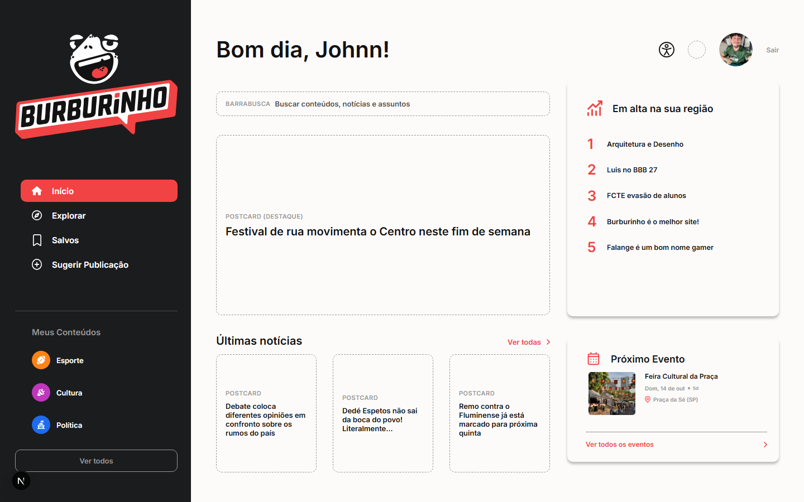 |
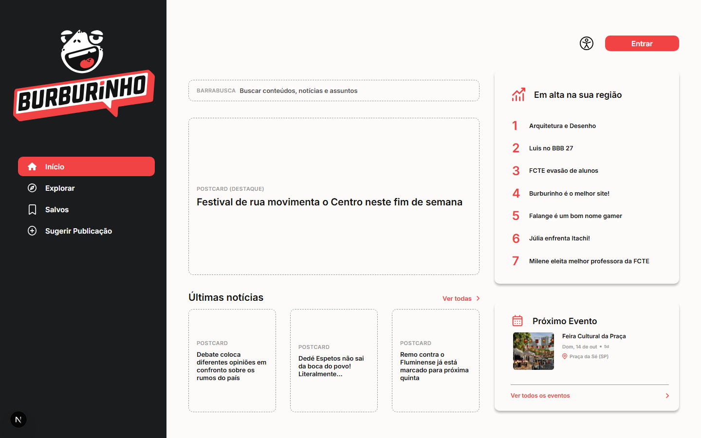 |
Mesma SideBar em outra rota (/explorar) |
Tela menor: a SideBar vira barra no topo |
|---|---|
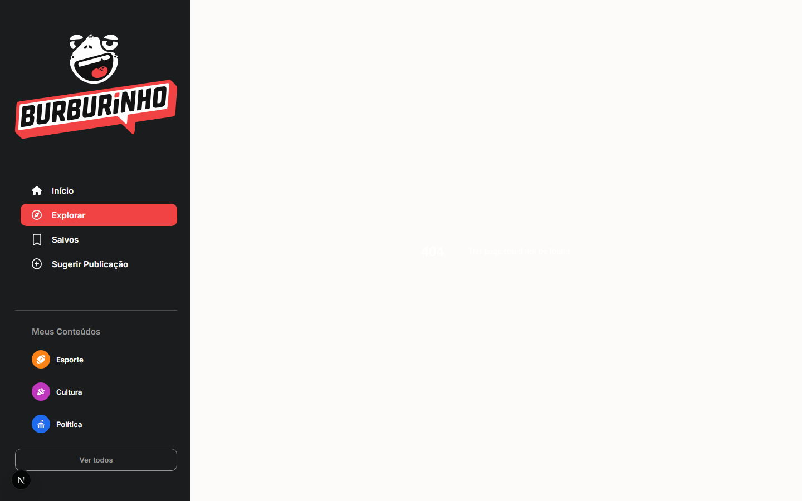 |
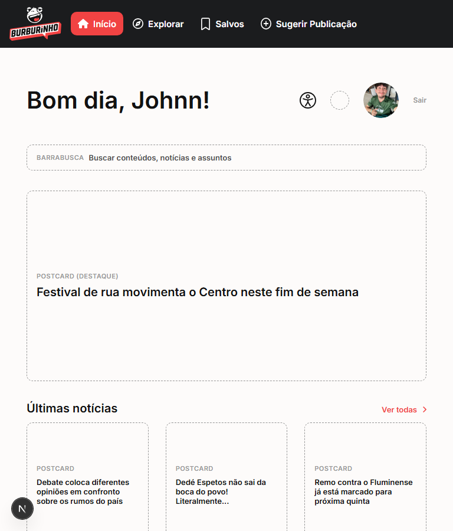 |
Os retângulos tracejados da Home são marcadores provisórios dos componentes das vagas 3 (PostCard) e 5 (BarraBusca, NotificationBell), combinados no cronograma (#10). No print de /explorar a página ainda é 404 porque a rota é da vaga 3, mas a SideBar já aparece com o item certo, sem nenhuma linha extra.
Uso da IA Generativa na Minha Solução
Usei o Claude Code (no VS Code), conectado ao Figma por MCP, para ler o protótipo, gerar os componentes e os testes, e para esboçar os diagramas da página 1.1.1. Revisei o resultado comparando com o Figma, com prints do portal rodando e com a documentação do Next.js instalada no projeto. O que mais pesou:
- Variantes do Figma: a issue sugeria que as 4 variantes podiam ser "expandida/recolhida". Lendo os nós do Figma, a IA confirmou que a única diferença é o item ativo. Por isso não existe prop
recolhida. - Bug pego ao conferir o build: a IA usou
next/imageacreditando que ele aplica sozinho obasePathdo GitHub Pages (o README do portal diz isso). Ao inspecionar o HTML gerado com obasePath, os ícones apontavam para/icones/..., sem a subpasta, e iam quebrar no site publicado. Comimages.unoptimized, o Next não prefixa o caminho; a correção foi usar ocaminhoPublico()da vaga 1. - URL com barra no final: como o projeto usa
trailingSlash: true, a rota chega como/salvos/. A comparação do item ativo foi feita ignorando a barra final, e há um teste para isso. - Teste que falhou por motivo errado: o primeiro teste da Home procurava o link de uma notícia na página inteira e achou dois (a mesma notícia estava no destaque). O código estava certo; o teste foi restringido à seção "Últimas notícias".
- Notação UML: conferi um a um, no diagrama de componentes, se a "bola" ficou do lado de quem fornece a interface e o "soquete" do lado de quem requer.
Senso Crítico
- Login simulado: a sessão é só uma flag no
localStorage; serve para alternar as duas versões do Figma, não para autenticar ninguém. Login e Cadastro reais estão fora do escopo da entrega. - Um item que não está no Figma: o link "Sair" ao lado do avatar não existe no protótipo, mas sem ele não seria possível voltar ao estado deslogado na demonstração.
- Responsividade decidida por nós: o Figma só tem telas de 1440 px. Abaixo de 900 px a SideBar vira uma barra no topo e, abaixo de 600 px, mostra só os ícones (o nome continua acessível a leitores de tela). Essa decisão não foi validada com o protótipo.
- Não abstraí de propósito: os cards "Em alta" e "Próximo Evento" só aparecem na Home, por isso não ganharam variantes nem configurações extras. Os assuntos em alta e o evento são dados fixos, porque o repositório de notícias não tem eventos nem métricas de popularidade.
- Dependência de outras vagas: a Home só fica completa com o
PostCard(vaga 3) e aBarraBusca/NotificationBell(vaga 5); até lá, usa marcadores. O logo da SideBar é estático e será trocado peloLogoTemada vaga 7.
Reutilização 3: Cards e Páginas de Categoria (PostCard, BadgeCategoria, PaginaCategoria)
Responsável: André Henrique (issue #3)
Contexto (Problema de Repetição)
No Figma existem 4 telas de categoria quase iguais: Política, Esporte, Tecnologia e Cultura. Todas têm banner com foto e título, ícone e nome da categoria, botão Seguir, descrição e "Últimas notícias". O que muda são só os dados: cor, ícone, foto, textos e notícias.
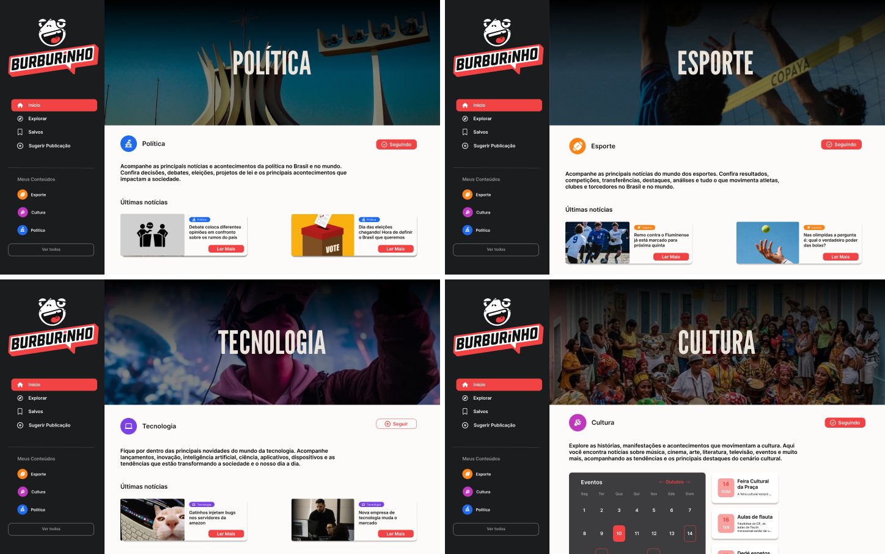
Figura: as 4 telas de categoria do protótipo têm a mesma estrutura (Fonte: protótipo do Grupo 3 no Figma, 2026)
O card de notícia também se repete: aparece em 3 formatos e em várias telas. O card grande de destaque e os cards compactos estão na Home; os cards horizontais, nas 4 categorias. No protótipo esses cards são frames soltos, copiados de tela em tela, e não um componente. A tela Explorar repete pela quinta vez os mesmos dados das categorias (ícone, cor, nome, descrição e membros).
Ponto de Reutilização e Relação com a Teoria
| Antes (no Figma) | Depois (no código) |
|---|---|
| 4 telas de categoria desenhadas uma a uma | 1 componente PaginaCategoria + 1 rota /categoria/[categoria] + 4 famílias na fábrica |
| Card de notícia copiado em cada tela, em 3 formatos | 1 componente PostCard com a prop variante |
| Cor, ícone e textos da categoria repetidos em badge, página e Explorar | 1 fábrica de categorias consultada por todos |
Nesta frente aparecem três níveis de reutilização:
- Componentes com props:
PostCard(variante,mostrarResumo,acoes),BadgeCategoria(categoria,tamanho) eBotaoSeguir(rotuloSeguir,convite), este último usado nas categorias e no Explorar. - Componente genérico parametrizado: a
PaginaCategoriarecebe só a fábrica da categoria e não cita nenhuma categoria pelo nome. É o mesmo raciocínio do slide 18: um hot spot abstrato com várias especializações. O núcleo comum com variações também é a ideia de linha de produto (slides 62 a 69): as 4 categorias são produtos da mesma linha, que diferem só nos dados. - GoF reaproveitado da Entrega 03: o Abstract Factory de comunidades virou a
fabricaCategorias.ts. É um padrão de projeto vivendo dentro do app que usa o framework (slides 76 a 78).
O que mudou na adaptação do Abstract Factory (JavaScript → TypeScript/React):
| Entrega 03 | Entrega 04 | Por quê |
|---|---|---|
TemaVisual.aplicar(pagina) pintava a página com as cores da família |
TemaCategoria.estilo() devolve as variáveis CSS da família (--cor-categoria, --posicao-banner), aplicadas no elemento raiz de cada componente |
No React o componente desenha; o tema decide as cores e o recorte do banner. |
PoliticaModeracao.moderar() |
ApresentacaoCategoria: nome, descrição e membros |
A moderação não faz parte das telas de categoria; os textos sim. |
WidgetPadrao.renderizar(), diferente em cada família |
SecaoCategoria.renderizar(renderizador): SecaoEventos em Cultura (bloco "Eventos" do Figma) e SecaoVazia nas outras |
É o produto com comportamento diferente por família, como na Entrega 03. A SecaoVazia é um Null Object: não desenha nada e evita um if na página. |
definirFactory(categoria) com um mapa |
FabricaCategoria.para(categoria) com um Record<Categoria, ...> |
Se o grupo criar uma categoria nova no contrato, o TypeScript acusa a fábrica que falta. |
O CriadorDeComunidade recebia a fábrica no construtor |
A rota e o Explorar escolhem a fábrica e a entregam pronta à PaginaCategoria e ao CardComunidade (prop fabrica) |
Quem usa a fábrica não decide qual família criar, só pede os produtos. |
Contrato do Componente (Props)
PostCard (código)
| Prop | Tipo | Obrigatória? | Padrão | Descrição |
|---|---|---|---|---|
noticia |
Noticia |
Sim | A notícia exibida; o card inteiro leva a /noticia/<id>. |
|
variante |
"destaque" \| "compacto" \| "horizontal" |
Não | "compacto" |
Formato do Figma: destaque e compacto na Home, horizontal nas categorias. |
mostrarResumo |
boolean |
Não | só no destaque | Exibe o resumo da notícia. |
acoes |
ReactNode |
Não | Espaço para botões de outras vagas (ex.: Salvar, vaga 5), por composição. |
BadgeCategoria (código)
| Prop | Tipo | Obrigatória? | Padrão | Descrição |
|---|---|---|---|---|
categoria |
Categoria |
Sim | Define nome, ícone e cor (vindos da fábrica). | |
tamanho |
"p" \| "m" |
Não | "m" |
"p" nos cards compactos, "m" nos horizontais. |
PaginaCategoria (código)
| Prop | Tipo | Obrigatória? | Padrão | Descrição |
|---|---|---|---|---|
fabrica |
FabricaCategoria |
Sim | A fábrica concreta da categoria. A página pede a ela o tema, os textos e a seção própria; as notícias vêm do repositorioNoticias. |
Componentes de apoio
| Componente / Hook | Contrato | Descrição |
|---|---|---|
BotaoSeguir |
categoria, rotuloSeguir? (padrão "Seguir"), convite?: "contorno" \| "preenchido" |
Seguir/Seguindo das categorias e Juntar-se do Explorar. |
CardComunidade |
fabrica |
Card do Explorar; leva à página da categoria. |
AgendaEventos |
eventos |
Bloco "Eventos" de Cultura, desenhado pela SecaoEventos. |
TempoPublicacao |
iso, className? |
"10min", "2h", "5d" (calculado no navegador para não congelar no build). |
useCategoriasSeguidas() |
devolve { seguidas, segue(c), definir(c, seguir) } |
Categorias seguidas, salvas no localStorage. |
FabricaCategoria.para(c) |
criarTema(), criarApresentacao(), criarSecao() |
Escolhe a fábrica concreta da categoria. |
Onde é Reutilizado
| Componente | Tela / rota | Arquivo que usa | Como | Usos |
|---|---|---|---|---|
PaginaCategoria |
/categoria/politica, /esporte, /tecnologia, /cultura |
app/categoria/[categoria]/page.tsx |
<PaginaCategoria fabrica={FabricaCategoria.para(categoria)} /> |
4 telas |
PostCard |
Home (vaga 2) | previsto em app/_home/PaginaInicial.tsx: o João troca os marcadores quando o PostCard entrar no main, como combinado no cronograma (#10) |
variante="destaque" e variante="compacto" |
4 cards previstos |
PostCard |
4 categorias | PaginaCategoria.tsx |
variante="horizontal" |
13 cards |
PostCard |
Salvos (vaga 5) | previsto na issue #5 | ||
BadgeCategoria |
4 categorias | dentro do PostCard (compacto e horizontal) |
tamanho="m" (e "p" na Home) |
13 badges; previsto também na Home (vaga 2) e na Notícia (vaga 4) |
BotaoSeguir |
4 categorias e Explorar | PaginaCategoria e CardComunidade |
"Seguir" com contorno; "Juntar-se" preenchido | 8 botões |
| Fábrica de categorias | categorias e Explorar | BadgeCategoria, PostCard, PaginaCategoria, CardComunidade |
criarTema() nos 4; criarApresentacao() em 3; criarSecao() na página |
4 componentes |
useCategoriasSeguidas |
todas as rotas | BotaoSeguir e SideBar (vaga 2) |
seguir em uma tela atualiza o "Meus Conteúdos" | 2 componentes |
Nenhum desses componentes cita uma categoria pelo nome: quem conhece as 4 categorias é só a fábrica.
Implementação (Código)
A fábrica: cada categoria é uma família (fabricaCategorias.ts, trecho):
export abstract class FabricaCategoria {
abstract criarTema(): TemaCategoria;
abstract criarApresentacao(): ApresentacaoCategoria;
abstract criarSecao(): SecaoCategoria;
static para(categoria: Categoria): FabricaCategoria {
return new FABRICAS[categoria]();
}
}
// Produto com comportamento diferente em cada família
export abstract class SecaoCategoria {
abstract renderizar<T>(renderizador: RenderizadorSecao<T>): T | null;
}
export class SecaoEventos extends SecaoCategoria {
renderizar<T>(renderizador: RenderizadorSecao<T>) { return renderizador.eventos(eventosCulturais); }
}
export class SecaoVazia extends SecaoCategoria {
renderizar() { return null; } // Null Object
}
class FabricaCultura extends FabricaCategoria {
criarTema() {
return new TemaCategoria("cultura", "var(--cor-cultura)", { /* ícone */ }, { src: "/categorias/banner-cultura.jpg", posicao: "center" });
}
criarApresentacao() { /* nome, descrição e membros, com os textos do Figma */ }
criarSecao() { return new SecaoEventos(); } // nas outras 3 fábricas: new SecaoVazia()
}
// O TypeScript exige uma fábrica para cada categoria do contrato.
const FABRICAS: Record<Categoria, new () => FabricaCategoria> = {
politica: FabricaPolitica, esporte: FabricaEsporte, tecnologia: FabricaTecnologia, cultura: FabricaCultura,
};
A página genérica não conhece nenhuma categoria (PaginaCategoria.tsx, trecho):
export function PaginaCategoria({ fabrica }: PaginaCategoriaProps) {
const tema = fabrica.criarTema();
const apresentacao = fabrica.criarApresentacao();
const secao = fabrica.criarSecao().renderizar({
eventos: (eventos) => <AgendaEventos eventos={eventos} />,
});
const noticias = repositorioNoticias.listarPorCategoria(tema.categoria);
return (
<div className={styles.pagina} style={tema.estilo()}>
<header className={styles.banner}>{/* foto tema.banner + título apresentacao.nome */}</header>
{/* ícone, <BotaoSeguir categoria={tema.categoria} />, apresentacao.descricao */}
{secao}
<ul className={styles.lista}>
{noticias.map((noticia) => (
<li key={noticia.id}><PostCard noticia={noticia} variante="horizontal" /></li>
))}
</ul>
</div>
);
}
E a rota única que gera as 4 telas no export estático (page.tsx):
export const dynamicParams = false;
export function generateStaticParams() {
return CATEGORIAS.map((categoria) => ({ categoria }));
}
export default async function Categoria({ params }: Props) {
const { categoria } = await params;
if (!ehCategoria(categoria)) notFound();
return <PaginaCategoria fabrica={FabricaCategoria.para(categoria)} />;
}
Demonstração em Uso
- Portal publicado: Política, Esporte, Tecnologia, Cultura e Explorar.
-
Testes automatizados:
fabricaCategorias.test.ts(cada fábrica cria uma família completa; a seção própria éSecaoEventosem Cultura eSecaoVazianas outras),PostCard.test.tsx(título e link corretos, o que cada variante mostra),PaginaCategoria.test.tsx(o mesmo componente monta as 4 telas; só Cultura mostra o bloco Eventos; Seguir continua salvo ao recarregar e aparece na SideBar),BadgeCategoria.test.tsx,categoriasSeguidas.test.tseformatarData.test.ts. -
Stories pedidas na issue #3, cada uma ligada ao nó do Figma de onde saiu:
Conteúdo/PostCard(destaque, destaque sem resumo, compacto, horizontal, com ação Salvar e uma por categoria),Conteúdo/BadgeCategoria(4 categorias e o tamanho pequeno),Conteúdo/PaginaCategoria(as 4 telas),Conteúdo/CardComunidade,Conteúdo/AgendaEventoseInteração/BotaoSeguir(Seguir, Seguindo e Juntar-se). Enquanto o Storybook não é publicado, o testestories.test.tsxrenderiza as 27 stories como o Storybook faria.
Mesma PaginaCategoria: Esporte |
Mesma PaginaCategoria: Cultura |
|---|---|
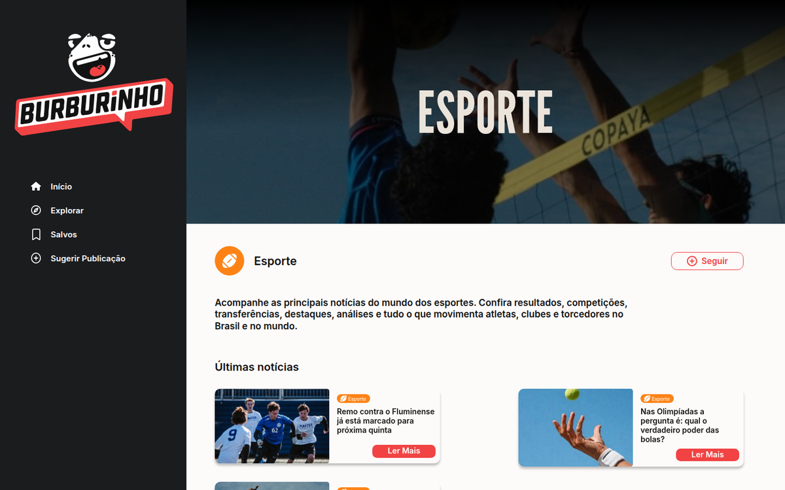 |
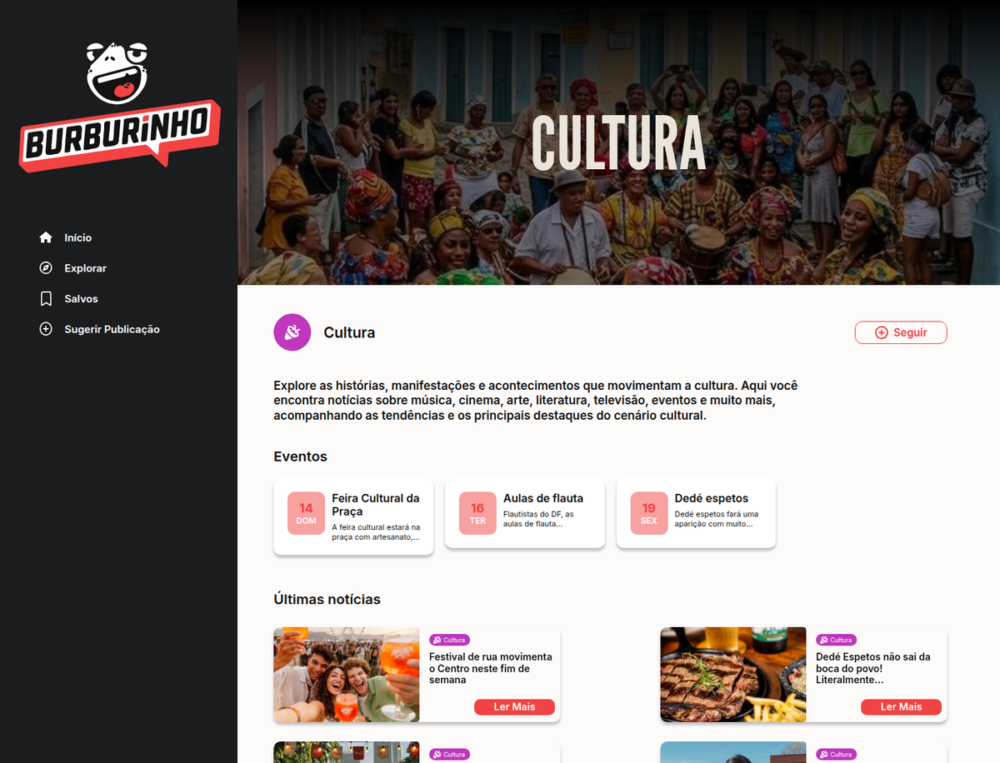 |
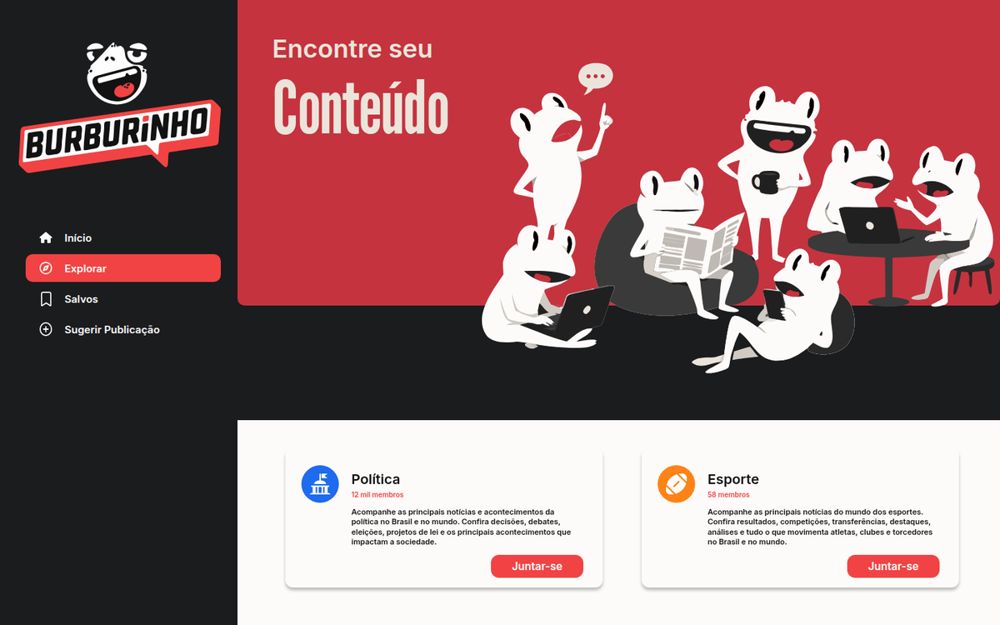
Figura: Explorar, com o CardComunidade e o BotaoSeguir alimentados pela mesma fábrica (Fonte: portal Burburinho, 2026)
Uso da IA Generativa na Minha Solução
Usei o Claude Code (no terminal), conectado ao Figma por MCP, para ler as telas do protótipo, gerar os componentes e os testes e redigir esta seção. Revisei o resultado comparando com o Figma, com prints do portal rodando, com os testes e com a documentação do Next.js.
O que aceitei da IA, depois de conferir: o Record<Categoria, ...> que obriga uma fábrica por categoria; o link do título cobrindo o card inteiro, que evita colocar botões dentro de um link; e os testes, que só mantive depois de vê-los falhar quando o código estava errado (como nos itens 3 e 4 abaixo).
O que precisei corrigir ou decidir:
- A própria issue estava errada, e a IA seguiu até conferir: os nós indicados para o
PostCard("Conteúdos" e "Conteúdo Menor") são as listas de categorias da SideBar, e não cards de notícia. Lendo os nós do Figma, encontramos os 3 cards reais, e por isso oPostCardtem 3 variantes, e não 2. - O
switchgigante que a issue avisava: a validação foi uma busca no código. Nenhum componente nem página temswitchou cita uma categoria pelo nome; só a fábrica conhece as 4 categorias. - Bugs pegos por teste: a data saía "01 de nov" (faltava converter o dia para número); e o teste do badge falhou porque o jsdom descarta
background: var(...). A cor passou a ir por uma variável CSS (--cor-badge). - Ferramenta que não funciona fora do Next: a IA colocou a fonte League Gothic (
next/font) dentro do componente, mas essa importação só existe quando o Next compila, e os testes do Vitest quebrariam. A fonte foi para olayout.tsx, como a Inter. - O que só apareceu usando o portal: testando, percebi que as páginas tinham largura fixa de 1098px (a medida do Figma) e sobrava espaço em telas maiores, e que o "Seguir" se perdia ao recarregar. As duas coisas foram corrigidas (largura total e o hook
useCategoriasSeguidascomlocalStorage). A IA também comentava demais o código, e pedi para enxugar. - A fábrica, revisada por mim: na primeira versão, os produtos da fábrica eram só dados (cor, textos), e as 4 famílias diferiam apenas nos valores. Isso contrariava o que aprendi na Entrega 03 (os produtos devem ter comportamento próprio em cada família). Pedi a correção: o tema passou a ter
estilo(), a página e o Explorar passaram a receber a fábrica pronta e voltou o terceiro produto,SecaoCategoria, que em Cultura desenha o bloco "Eventos" do Figma e nas outras categorias não desenha nada.
Senso Crítico
- Por que não criamos 4 componentes: as 4 telas diferem nos dados, não na estrutura. Com 4 componentes, cada ajuste (um botão novo, outro espaçamento) teria de ser repetido 4 vezes, e uma categoria nova seria uma tela inteira. Agora é uma fábrica a mais.
- Quando a abstração começa a atrapalhar: Cultura já é diferente (tem o bloco Eventos). Em vez de um
if (categoria === "cultura")dentro da página, a diferença virou um produto da família (SecaoEventos). Se outras categorias pedirem layouts muito diferentes, a página vai acumular seções, e aí valeria compor páginas próprias a partir de peças menores (banner, cabeçalho, lista). - Custos da fábrica (revisão de 20/11): a importação de
AgendaEventosporSecaoEventosfoi removida. A seção continua decidindo o comportamento da família, mas recebe umRenderizadorSecao<T>;PaginaCategoriafornece a função que monta a agenda. Isso remove a dependênciapadroes → componentse preserva o Abstract Factory e o Null Object, sem condicional por categoria na página. Há um contrato adicional entre produto e renderizador, coberto por testes. Do bloco Eventos do Figma, ficou de fora o calendário mensal: implementei a lista de eventos, com dados de exemplo (dia e dia da semana como no protótipo). - Desvios do Figma, de propósito: textos de 5,9px a 7px (badge pequeno, autor e tempo do card compacto) subiram para 8 a 10px, por legibilidade. A data segue o Figma ("2h", "5d") em vez do "Hoje, 09:42" sugerido na issue. No Explorar, só a faixa sob a ilustração é escura. As fotos dos banners foram convertidas de PNG para JPEG (de 4,5 MB para 0,5 MB).
- Limites da persistência: seguir uma categoria fica salvo só no navegador (
localStorage): não vale em outro dispositivo e não existe back-end. A página Explorar usa, para Tecnologia, a descrição da tela da categoria, porque o card do Figma tinha um texto provisório. - Stories escritas antes do Storybook: como o Storybook ainda não está instalado no projeto, as stories foram escritas sem importar os tipos dele (
Meta,StoryObj), para não quebrar o build. Assim que ele entrar no main, falta só acrescentar esses tipos. Até lá, um teste renderiza todas elas. As versões DarkMode do Figma viram stories quando o seletor de tema da vaga 6 existir.
Reutilização 4: Notícia e Sugerir Publicação (BotaoAcao, CampoFormulario, NoticiaBuilder)
Responsável: Luís Cunha
Contexto (Problema de Repetição)
No Figma, várias ações têm a mesma estrutura visual: Voltar, Compartilhar, Salvar e Enviar aparecem como botões com rótulo e, em alguns casos, ícone. O formulário de Sugerir Publicação repete o mesmo padrão rótulo, entrada, placeholder e validação em quatro campos obrigatórios e um campo opcional. Sem abstração, essas combinações seriam copiadas em diferentes telas e ficariam sujeitas a divergências de cor, tamanho, estado ativo e acessibilidade.
Ponto de Reutilização e Relação com a Teoria
Os componentes BotaoAcao e CampoFormulario aplicam customização por props, um ponto de variação da reutilização de frameworks discutido no material da disciplina. O Builder da Entrega 03 foi adaptado de JavaScript para NoticiaBuilder em TypeScript: o formulário atua como Director, chama passos encadeados e o método construir() cria e valida o produto Noticia.
O PostCard da vaga 3 é reutilizado na pré-visualização de Sugerir Publicação. Assim, dados UGC e dados da redação passam pelo mesmo componente de apresentação, variando apenas a notícia e a chamada da rota.
Contrato do Componente (Props)
BotaoAcao recebe rotulo, icone, variante (primario, secundario ou texto), ativo, onClick, href e type. Quando recebe href, usa Link ou <a>; caso contrário, renderiza <button>. CampoFormulario recebe rotulo, nome, tipo, opcoes, valor, aoMudar, erro, obrigatorio e placeholder, usando useId() para conectar o rótulo ao campo.
NoticiaBuilder expõe comTitulo, comCategoria, comParagrafos, comAutor, comResumo e comImagem. construir() valida as informações obrigatórias e lança ErroNoticiaBuilder com o campo correspondente.
Onde é Reutilizado
BotaoAcao aparece quatro vezes na tela de notícia (Voltar, Compartilhar e Salvar, além de estados derivados) e duas vezes no fluxo de Sugerir (Enviar outra sugestão e Enviar sugestão). CampoFormulario aparece cinco vezes em Sugerir Publicação: categoria, título, texto, autor e localização opcional. Com isso, o formulário mantém um único padrão visual e de acessibilidade.
NoticiaBuilder é usado pela tela de sugestão e seus testes. PostCard continua sendo usado pela Home, categorias e prévia UGC, demonstrando reutilização entre componentes de vagas diferentes.
Implementação (Código)
- Página dinâmica de notícia:
PaginaNoticia.tsxepage.tsx. - Botão reutilizável:
BotaoAcao.tsx. - Campo reutilizável:
CampoFormulario.tsx. - Builder adaptado:
NoticiaBuilder.ts. - Tela UGC:
PaginaSugerir.tsx.
Demonstração em Uso
- A rota
/noticia/[id]usagenerateStaticParams()edynamicParams = false, exigências do Next.js 16 para export estático. Cada card pode abrir a notícia correspondente. - Compartilhar usa
navigator.share; quando indisponível, copia o endereço comnavigator.clipboard. - O formulário valida os campos, monta
Noticiacom o Builder, adiciona a sugestão ao repositório em memória e mostra a prévia comPostCard. - Stories cobrem variantes dos dois componentes e a tela Sugerir nos modos claro e escuro.
Uso da IA Generativa na Minha Solução
IA Generativa foi usada para acelerar a leitura dos frames do Figma, escrever a primeira versão dos componentes e localizar integrações no projeto. Eu revisei o resultado contra o protótipo, os contratos da issue e o Next.js 16, não aceitei código gerado sem validação. O build e os testes verificaram os contratos; a inspeção visual encontrou diferenças de largura, título, espaçamento e campos visíveis no Figma.
Senso Crítico
Não existe back-end real nesta vaga: sugestões ficam no repositório em memória da sessão e desaparecem ao recarregar. Isso atende à demonstração, mas não equivale a moderação pública. Como próximo passo, os padrões State e Chain of Responsibility da Entrega 03 podem controlar estados como enviada, em revisão, publicada ou rejeitada. O upload mostrado no protótipo ainda pode permanecer como interface visual até existir armazenamento de mídia.
Reutilização 5: Busca, Notificações e Salvos (BarraBusca, NotificationBell, useSalvos)
Responsável: Matheus Eiki
Contexto (Problema de Repetição)
No Figma, a mesma notícia aparece na Home, nas categorias, na tela de Notícia, em Salvos e nos resultados de busca. Cada tela precisaria buscar e filtrar notícias do seu jeito, além de ter um campo de busca (Home) e um sino de notificações (topo da Home logado). Sem hooks customizados, a lógica de salvar/remover notícias (localStorage) e de assinar/publicar eventos (notificações) seria duplicada em cada componente que precisar dela.
Ponto de Reutilização e Relação com a Teoria
O ponto de reutilização está em dois níveis:
- Reutilização de interface (componente):
BarraBusca,NotificationBelle a páginaSalvossão componentes React com props bem definidas, renderizados na Home e em outras rotas. - Reutilização de lógica (hook):
useSalvoseuseNotificacoessão hooks customizados que encapsulam regras de negócio independentemente da interface. No corte desta revisão,useSalvosé consumido pela página Salvos; o botão da Notícia (vaga 4) ainda é uma integração planejada. A revisão de Pedro centraliza a leitura, gravação e assinatura emlib/noticiasSalvas.ts, permitindo que consumidores simultâneos compartilhem o mesmo estado sem sobrescrever alterações. Os testes exercitam dois consumidores, mas não devem ser contados como duas telas implementadas.
O padrão Observer foi reaproveitado da Entrega 03 através de um eventBus enxuto só no front-end.
Relação com a teoria (slides da aula "Reutilização & Framework"):
- Slide 18: reutilização de lógica via hooks customizados evita duplicar regras de negócio entre componentes.
- Observer (GoF da Entrega 03): eventBus permite pub/sub desacoplado entre partes do portal que não se conhecem diretamente.
Contrato do Componente (Props)
| Componente | Props | Descrição |
|---|---|---|
BarraBusca |
placeholder?, valorInicial? |
Campo de busca com debounce 300 ms. Exibe dropdown de resultados abaixo da barra, sem sair da página. Clicar em um resultado abre a notícia. |
NotificationBell |
(sem props) | Sino com contador de não lidas e dropdown. Usa useNotificacoes. |
| Contrato dos hooks customizados: |
| Hook | Retorno | Tipo | Descrição |
|---|---|---|---|
useSalvos |
{ idsSalvos, estaSalvo(id), alternar(id), remover(id) } |
readonly string[], (id: string) => boolean, (id: string) => void, (id: string) => void |
Lista de IDs salvos, verifica se uma notícia está salva, alterna (salva/remove) e remove um ID específico. Persiste em localStorage. |
useNotificacoes |
{ notificacoes, naoLidas, marcarComoLidas } |
Notificacao[], number, () => void |
Lista de notificações, contador de não lidas e marca todas como lidas. Assina o eventBus (Observer). |
Onde é Reutilizado
| Item | Onde é usado |
|---|---|
useSalvos |
Página /salvos; botão Salvar na Notícia ainda pendente |
useNotificacoes |
NotificationBell (topo da Home logado); produção real dos eventos ainda pendente |
BarraBusca |
Home (topo da página principal), dropdown de resultados em tempo real |
eventBus |
useNotificacoes (assina); a publicação pela vaga 4 ainda é planejada |
Página /salvos |
SideBar item "Salvos" → /salvos |
Página /busca |
Acesso direto via URL (/busca/?q=<termo>) |
Implementação (Código)
portal/src/padroes/eventBus.ts — EventBus enxuto com assinar(evento, callback), publicar(evento, dados), cancelar(evento, callback). Eventos: 'noticia-publicada', 'sugestao-enviada'.
portal/src/hooks/useSalvos.ts ('use client'):
export function useSalvos() {
const idsSalvos = useSyncExternalStore(
assinarNoticiasSalvas,
lerNoticiasSalvas,
salvosNoServidor,
);
return {
idsSalvos,
estaSalvo: (id: string) => idsSalvos.includes(id),
alternar: alternarNoticiaSalva,
remover: removerNoticiaSalva,
};
}
storage sincroniza outras abas da mesma origem. Se a gravação falhar, a alteração permanece apenas na memória da aba.
portal/src/hooks/useNotificacoes.ts ('use client'): assina eventBus no useEffect e cancela no cleanup (evita vazamento de memória e callbacks em componentes desmontados). Começa com 3 notificações de exemplo.
portal/src/components/BarraBusca/BarraBusca.tsx ('use client'): debounce simples de 300 ms, props placeholder?, valorInicial?. Busca no repositorioNoticias e mostra resultados em dropdown abaixo da barra. Não navega para outra página.
portal/src/components/NotificationBell/NotificationBell.tsx ('use client'): sino com botão nativo, contador e painel suspenso; marca como lidas somente ao acionar "Marcar todas como lidas". Escape fecha o painel e devolve o foco ao sino.
portal/src/app/salvos/page.tsx ('use client'): lista PostCard (vaga 3) das notícias salvas + estado vazio "Você ainda não salvou nenhuma publicação".
portal/src/app/busca/page.tsx ('use client' dentro de <Suspense>): lê ?q= com useSearchParams, mostra resultados com PostCard.
Demonstração em Uso
- O hook salva IDs, recupera-os após remontagem e sincroniza consumidores, conforme os testes. A jornada pela página de notícia depende da integração da vaga 4 e não é apresentada como concluída.
- Na Home, digitar na BarraBusca exibe resultados em dropdown após 300 ms (tipo Instagram/TikTok), sem sumir com a barra.
- O sino mostra o contador (ex.: "2"); abrir a lista não altera a leitura. O botão "Marcar todas como lidas" zera o contador sem fechar o painel.
- Publicar
evento 'sugestao-enviada'noeventBusincrementanaoLidasnouseNotificacoes.
Uso da IA Generativa na Minha Solução
Usada para gerar o esqueleto inicial dos componentes (CSS, estrutura JSX) e dos testes, sempre com revisão manual. A decisão de acessar localStorage somente dentro de useEffect (para não quebrar o build estático) e de proteger com try/catch veio da análise do código existente (categoriasSeguidas.ts), não da IA.
Senso Crítico
O eventBus é um módulo com estado global simples — suficiente para o portal, mas não escala para múltiplas abas/usuários simultâneos (usaria um backend real ou Broadcast Channel para multi-aba). O debounce de 300 ms da BarraBusca é simples e não cancela requisições em flight, o que é aceitável para busca em memória no repositorioNoticias.
Observer: antes × depois. Na Entrega 03, o Observer era implementado no back-end (servidor + SSE — Server-Sent Events), com conexões persistentes entre cliente e servidor. Nesta entrega, reutilizamos a ideia de publicar/assinar eventos, mas em uma versão enxuta só no front-end (portal/src/padroes/eventBus.ts), sem servidor, sem SSE e sem WebSocket. Simplificamos porque o portal é estático (Next.js output: "export", sem Node.js rodando no servidor), então não há como manter conexões SSE. A versão front-end resolve o problema de desacoplar o NotificationBell de quem dispara eventos (ex.: vaga 4 ao enviar sugestão), com custo perto de zero.
Limites da persistência: localStorage grava só no navegador do usuário. Não sincroniza entre dispositivos (celular vs computador) e não existe back-end central — se o usuário abrir o portal em outro navegador ou dispositivo, os salvos não aparecem. Notificações são simuladas (3 exemplos fixos no código); em produção viriam de uma API real.
Reutilização 6: Tema e Acessibilidade (ThemeProvider, useTema, ToggleModoEscuro)
Responsável: Giovanna Aguiar (issue #6 · commit: 5633092)
Contexto (Problema de Repetição)
No Figma, a página Protótipo tem 10 telas nomeadas DarkMode: Home, Notícia, Salvos, Acessibilidade, Profile, Sugerir Publicação, Tecnologia, Política, Esporte e Cultura. Ou seja, quase todas as telas existem em duas versões, que mudam só as cores.
Se eu implementasse cada uma separadamente, o portal acabaria com duas versões de cada página, e cada componente teria que saber em qual tema está. Qualquer ajuste de estilo teria de ser feito duas vezes, e a cada tela nova o trabalho dobraria. O mesmo vale para as preferências de acessibilidade (fonte maior, alto contraste, menos animações): sem um ponto central, cada tela teria que tratar isso por conta própria.
Resolvi isso concentrando tema e preferências em um único estado, que vale para o portal inteiro.
Componente no Figma: Modo Escuro
| Tela | Claro | Escuro |
|---|---|---|
| Acessibilidade | 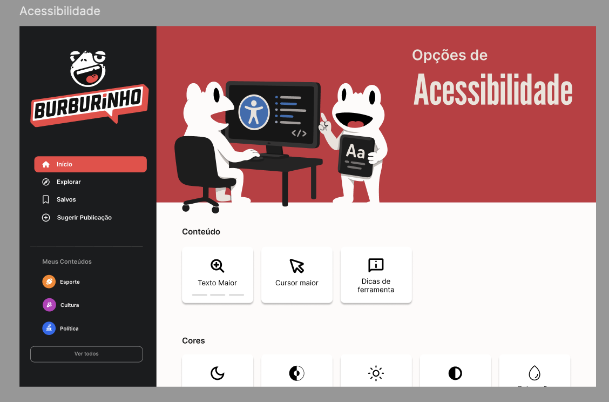 |
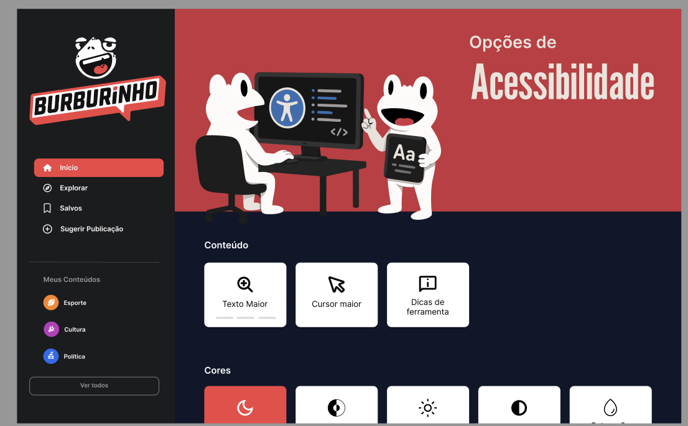 |
Ponto de Reutilização e Relação com a Teoria
O nível de reutilização desta frente é o estado transversal: Context API + variáveis CSS.
O fluxo é este:
- O
ThemeProviderguarda o estado (tema, fonte, alto contraste, reduzir animações). - A cada mudança, ele escreve atributos
data-*no<html>. - O
globals.csstroca o valor das variáveis CSS conforme esses atributos. -
Todos os componentes já usam
var(--cor-...), então mudam de aparência sem saber que o tema existe.
Relação com a teoria:flowchart LR A[ThemeProvider] --> B["atributos data-* no html"] B --> C["variáveis CSS em globals.css"] C --> D["Home, Perfil e Acessibilidade"] E[useTema] --> A F[ToggleModoEscuro e controles] --> E -
Parte fixa × pontos flexíveis: o Provider faz parte da estrutura compartilhada da minha aplicação, e o que varia de rota para rota é o conteúdo que entra por
children. Isso não quer dizer que o Provider seja parte interna do Next.js; ele é código nosso, encaixado nolayout.tsx, que é o hot spot que o framework chama. - Extensível: para criar uma nova preferência (por exemplo, o cursor maior que acrescentei depois), eu só adiciono um campo ao estado e uma regra no CSS. Nenhum componente existente muda.
- Seguro, por encapsulamento: ninguém lê o Context diretamente; o acesso é só pelo
useTema. O hook lança um erro claro se for usado fora do Provider, em vez de devolver um valor errado em silêncio.
Contrato do Componente (Props)
| Elemento | Contrato |
|---|---|
ThemeProvider |
Recebe children: ReactNode. Deve envolver o AppLayout uma única vez, no layout raiz. |
useTema() |
Retorna tema, fonte, altoContraste, reduzirAnimacoes e as funções definirTema, definirFonte, definirAltoContraste e definirReduzirAnimacoes, além de cursorMaior/definirCursorMaior e dicasFerramenta/definirDicasFerramenta. |
tema |
claro ou escuro. Sem preferência salva, usa o prefers-color-scheme do sistema ao montar no navegador. |
fonte |
normal (16px), grande (18px) ou muito-grande (22px). O valor de 22px foi definido por mim nesta implementação, porque o Figma não o especifica. |
ToggleModoEscuro |
Consome o useTema. Por padrão, é um role="switch" com aria-checked. Com a prop selecionar, aplica diretamente o modo escuro, usando um botão com aria-pressed, ao lado do Modo Claro. |
Persistência: as preferências ficam no localStorage, na chave burburinho:preferencias. Tomei três cuidados:
- a leitura valida cada campo antes de aceitar o valor salvo;
- a gravação só começa depois da recuperação inicial, para o valor padrão não sobrescrever a escolha anterior do usuário;
- se o armazenamento falhar (por exemplo, navegação privada), o portal continua funcionando na sessão.
Fora do Provider,
useTemalançauseTema deve ser usado dentro de um ThemeProvider.
Onde é Reutilizado
| Tela/rota | Arquivo que usa | Como |
|---|---|---|
| Todas as rotas | app/layout.tsx |
<ThemeProvider><AppLayout>{children}</AppLayout></ThemeProvider>: uma linha leva o tema a todo o portal. |
Acessibilidade (/acessibilidade) |
app/acessibilidade |
Reaproveita o ToggleModoEscuro e usa useTema nos controles de fonte, contraste, animações, cursor e dicas. |
Home (/) e Perfil (/perfil) |
app/page.tsx e app/perfil |
Não consomem o hook: recebem as cores só pelas variáveis CSS. |
| Storybook | ToggleModoEscuro.stories.tsx |
Story do toggle com o mesmo contrato (pendente: depende da configuração do Storybook pela vaga 7). |
Implementação (Código)
Arquivos principais:
ThemeProvider.tsxeuseTema.tsToggleModoEscuro(componente, estilos,index.tse story)- Página Acessibilidade e Página Perfil
- Integração em
layout.tsxe regras emglobals.css - Testes:
ThemeProvider.test.tsxeuseTema.test.tsxTrecho do hook, que é o ponto de encapsulamento:
import { useContext } from "react";
import { TemaContext } from "@/contexts/ThemeProvider";
export function useTema() {
const contexto = useContext(TemaContext);
if (contexto === undefined) {
throw new Error("useTema deve ser usado dentro de um ThemeProvider.");
}
return contexto;
}
Trecho do globals.css, que reage aos atributos data-* escritos pelo Provider:
:root[data-tema="escuro"] {
--cor-fundo: #0f172a;
--cor-texto-sobre-fundo: #ffffff;
}
:root[data-fonte="grande"] { --tamanho-fonte-base: 18px; }
:root[data-fonte="muito-grande"] { --tamanho-fonte-base: 22px; }
:root[data-contraste="alto"] {
--cor-fundo: #000000;
--cor-texto-sobre-fundo: #ffffff;
--cor-primaria: #ffff00;
--cor-sobre-primaria: #000000;
/* ... demais variáveis */
}
:root[data-animacoes="reduzidas"],
:root[data-animacoes="reduzidas"] *,
:root[data-animacoes="reduzidas"] *::before,
:root[data-animacoes="reduzidas"] *::after {
transition: none !important;
animation: none !important;
scroll-behavior: auto !important;
}
O seletor é :root[data-tema="escuro"] porque [data-tema="escuro"] sozinho tem a mesma especificidade de :root, e aí só a ordem no arquivo decidiria qual regra vence.
Demonstração em Uso
Comparação do build local nas duas aparências.
| Tela | Claro | Escuro |
|---|---|---|
| Home | 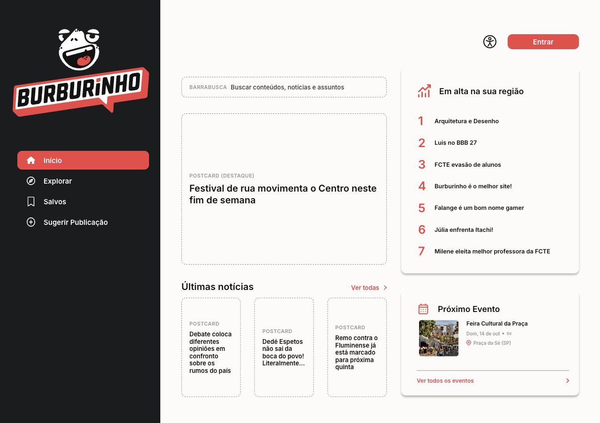 |
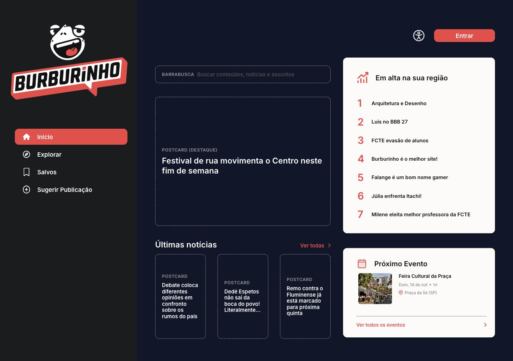 |
| Perfil | 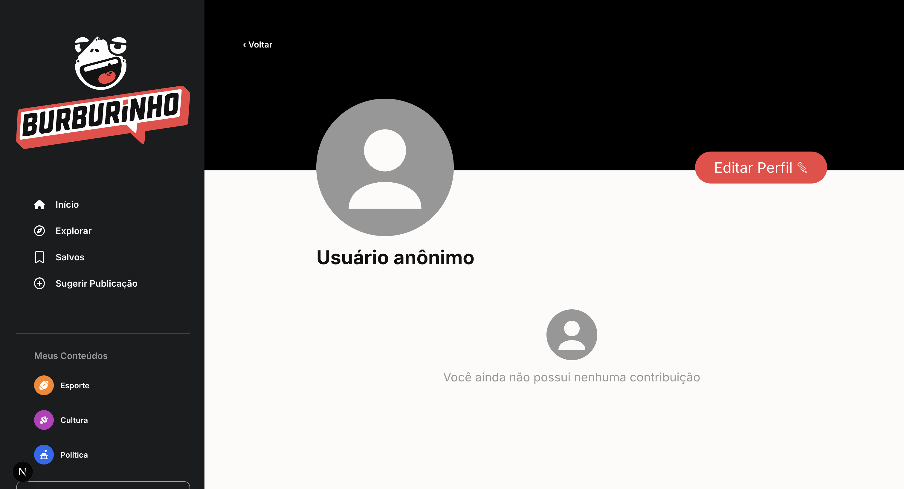 |
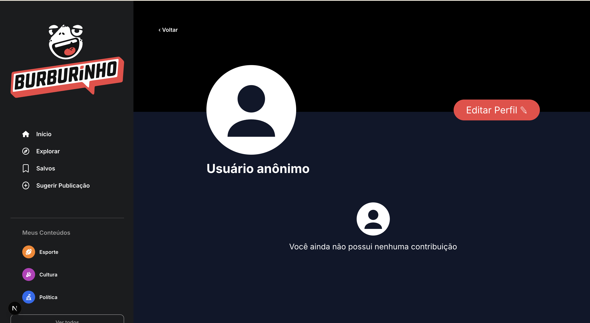 |
O que validei:
- 45 testes passaram, dos quais 9 são casos novos da vaga 6 (inclusive "alternar muda
data-temanohtml" e "useTemafora do Provider lança erro"); - o lint passou sem avisos e o build estático foi concluído;
- no navegador, conferi a alternância de tema, a persistência após recarregar, as fontes de 18px e 22px, os atributos de contraste e animações e a navegação da Home para Acessibilidade e Perfil;
- varri o CSS procurando cores fixas fora do
globals.csse não encontrei nenhuma, então não precisei abrir aviso para ninguém.
Uso da IA Generativa na Minha Solução
Usei o OpenAI Codex para ler a issue e o repositório, inspecionar o Figma e gerar o Provider, o hook, o toggle, as duas páginas, os estilos, a story, os testes e o rascunho desta documentação, além de ajustes pontuais no layout e no CSS global. Não aceitei o resultado sem conferir: rodei testes, lint e build e comparei no navegador com as telas do Figma que consegui acessar.
Senso Crítico
- Context × Decorator (Entrega 03): os dois evitam duplicação, mas fazem coisas diferentes. O Decorator acrescenta comportamento a um objeto por composição, e foi o que usamos para os temas da Home. O Context fornece estado compartilhado. Aqui, usar Decorator exigiria decorar cada página; com Context, nenhuma página precisa saber do tema, nem receber o tema por props.
- Risco de colocar coisas demais no Context: quando o valor do Context muda, todos os consumidores renderizam de novo. Por isso o meu Context guarda só as preferências, sem notícias nem dados de sessão. Os componentes que usam só variáveis CSS nem assinam esse estado (conforme a documentação de useContext).
- Possível flash de tema claro: a leitura do
localStoragefica numuseEffect, para o primeiro render ser compatível com a exportação estática do Next. O custo é que o tema claro pode aparecer por um instante antes da preferência ser recuperada. Não garanto ausência de flash. Os efeitos rodam no cliente, como explica a documentação de useEffect. - O hook não é uma barreira de segurança: ele melhora o diagnóstico de uso incorreto, mas nada impede alguém de importar o Context direto.
- Alto contraste não é auditoria: defini o alto contraste separado do modo escuro, mas isso não equivale a uma auditoria completa de acessibilidade.
- O que eu faria com mais tempo: evitar o flash com um script inline no
<head>, validar o contraste com uma ferramenta de acessibilidade e criar um lint de CSS que barre cor fixa.
Reutilização 7: Catálogo e Identidade Temática (Storybook, LogoTema)
Responsável: Johnnatan de Salles (issue #7).
Contexto (Problema de Repetição)
Sem catálogo, cada integrante precisa descobrir props e estados lendo código ou perguntando ao autor. As variantes sazonais também não deveriam exigir uma SideBar diferente para cada data.
Ponto de Reutilização e Relação com a Teoria
O Storybook torna os componentes usáveis e compreensíveis antes de serem
reutilizados (slide 40): stories exemplificam entradas, Autodocs extrai a
tabela do código e controles permitem experimentação. O addon de documentação
é um exemplo de extensão por plugin (slide 52). No
Decorator da Entrega 03,
classes envolviam a página e substituíam o arquivo do logo no HTML. No portal,
LogoTema compõe LogoBase e seleciona uma das imagens originais por prop ou
data, sem alterar strings HTML nem herdar das classes antigas. As opções de
tema são alternativas de variabilidade (slides 70–72).
Contrato do Componente (Props)
| Prop | Tipo | Padrão | Efeito |
|---|---|---|---|
tema |
"padrao" \| "natal" \| "halloween" \| "estudante" |
omitida: data local automática | Força a imagem escolhida; padrao também pode ser forçado. |
O automático usa 25/12, 31/10 e 11/08, respectivamente, e padrao nos demais
dias. A escolha é atualizada à meia-noite e quando a aba volta a ficar visível.
Na exportação estática o primeiro HTML usa o logo padrão; após a hidratação é
aplicada a data do navegador.
Onde é Reutilizado
LogoTema aparece na SideBar, fornecida pelo AppLayout raiz a todas as
rotas. O catálogo também permite visualizar as quatro variantes isoladamente.
Implementação (Código)
LogoTema e seleção de data ·
stories ·
configuração Storybook ·
workflow.
O Storybook usa @storybook/nextjs-vite, recomendado pela documentação atual,
@storybook/addon-docs, staticDirs e o mesmo CSS e ThemeProvider do portal.
No build do Pages, NEXT_PUBLIC_BASE_PATH aponta para /storybook, não para
/portal, para que os assets também funcionem no catálogo.
Demonstração em Uso
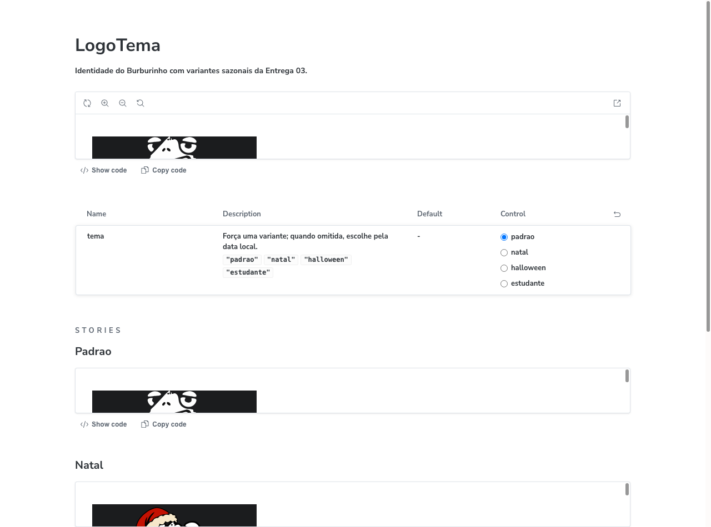
Captura do build local com o caminho de Pages. O catálogo publicado depende do merge e de uma execução bem-sucedida do workflow; não é evidência de publicação antecipada. Os testes cobrem as datas, a troca à meia-noite e a prop forçada.
Uso da IA Generativa na Minha Solução
O Copilot SDK no VS Code foi usado para inspecionar o código, implementar e redigir este rascunho. A versão e as APIs foram confrontadas com a documentação oficial; testes, lint, builds e verificação local no navegador servem de evidência. O responsável deve revisar o texto e as decisões antes da entrega.
Senso Crítico
Os SVGs temáticos originais são imagens completas, não ornamentos separados.
Reaproveitá-los preserva o desenho, mas não implementa a composição independente
de LogoBase com um ornamento por tema pedida na issue; para isso seria
necessário separar e validar os vetores no Figma. A data é a do dispositivo e
há um breve logo padrão antes da hidratação. A conferência final e o mapa devem
ser refeitos após o congelamento do código; stories de componentes adicionados
por outras vagas ainda precisam ser incluídas.
Mapa de Reutilização
Levantamento provisório de 19/11/2026, antes da vaga 4 e do congelamento.
Os números são pontos de chamada no código, não instâncias renderizadas:
excluem stories, testes e comentários; um .map ou rota dinâmica conta uma
vez. Para hooks contam-se chamadas, não declarações. Após a revisão de 20/11, a agenda é instanciada em JSX pelo renderizador fornecido por PaginaCategoria; o mapa deve contar esse ponto de chamada. Os usos indiretos pelo
layout e pelos componentes são indicados, mas não somados novamente.
Nó “—” indica ausência de nó identificado, não inexistência no Figma. Hooks não
têm story própria: a coluna aponta para a demonstração do consumidor.
| Componente/Hook | Nível | Props principais | Telas / pontos de uso | Nó no Figma | Story | Código | Autor(a) |
|---|---|---|---|---|---|---|---|
| AppLayout | Composição | children |
Layout raiz, todas as rotas (1) | SideBar 115:68 | Docs | Código | João Pedro |
| SideBar | Props / composição | itemAtivo, logado, categoriasSeguidas |
AppLayout, todas as rotas (1) | 115:68 | Docs | Código | João Pedro |
| LogoTema | Props / composição | tema |
SideBar, todas as rotas (1) | 520:810 | Docs | Código | Johnnatan |
| PaginaInicial | Props | destaque, ultimas, evento |
Home (1) | 6:5 | Docs | Código | João Pedro |
| Marcador | Composição | componente, href, children |
Home (2; um dentro de lista) | — | Docs | Código | João Pedro |
| CardEmAlta | Props | assuntos, limite, titulo |
Home (1) | 15:1349 | Docs | Código | João Pedro |
| CardEvento | Props | evento, hrefTodos |
Home (1) | 230:1005 | Docs | Código | João Pedro |
| BarraBusca | Props / estado | placeholder, valorInicial |
Home (1) | — | Docs | Código | Matheus |
| NotificationBell | Hook / estado | — | Home logada (1) | — | Docs | Código | Matheus |
| PostCard | Props / composição | noticia, variante, acoes |
Busca, Salvos e categorias (3) | 183:654 | Docs | Código | André |
| BadgeCategoria | Props | categoria, tamanho |
PostCard: Busca, Salvos e categorias (1) | 230:1212 | Docs | Código | André |
| TempoPublicacao | Hook / props | iso, className |
PostCard: Busca, Salvos e categorias (1) | — | Docs | Código | André |
| PaginaCategoria | Componente genérico | fabrica |
Rota dinâmica de 4 categorias (1) | 230:737 | Docs | Código | André |
| AgendaEventos | Props / fábrica | eventos |
Categoria Cultura via fábrica (1) | 250:1678 | Docs | Código | André |
| CardComunidade | Props / fábrica | fabrica |
Explorar (1 dentro de lista) | 143:443 | Docs | Código | André |
| BotaoSeguir | Props / hooks | categoria, rotuloSeguir, convite |
Categorias e Explorar (2) | 183:1654 | Docs | Código | André |
| ControleAcessibilidade | Props / composição | rotulo, descricao, ativo, onClick |
Acessibilidade (11) e ToggleModoEscuro (1): 12 | — | Docs | Código | Giovanna Aguiar |
| ToggleModoEscuro | Context | selecionar |
Acessibilidade (1) | — | Docs | Código | Giovanna Aguiar |
| ThemeProvider | Context / composição | children, temaInicial |
Layout raiz, todas as rotas (1) | — | Toggle | Código | Giovanna Aguiar |
| useTema | Context / hook | — | Acessibilidade, ControleAcessibilidade e ToggleModoEscuro (3) | — | Toggle | Código | Giovanna Aguiar |
| useSessaoSimulada | Hook | — | Home, SideBar, BotaoSeguir (3) | — | Home | Código | João Pedro |
| useCategoriasSeguidas | Hook | — | SideBar e BotaoSeguir (2) | — | Seguir | Código | André |
| useNotificacoes | Hook / Observer | — | NotificationBell (1) | — | Sino | Código | Matheus |
| useSalvos | Hook | — | Salvos (1) | — | Sem story de Salvos | Código | Matheus |
Os 12 pontos de ControleAcessibilidade evitam repetir estrutura e estado
acessível; PostCard compartilha três pontos entre telas e PaginaCategoria
gera quatro rotas a partir de uma chamada. Não se deve confundir essas
chamadas com o número de cartões efetivamente renderizados. Os marcadores da
Home ainda não são usos de PostCard. A agenda existe apenas em Cultura: não
há evidência suficiente para generalizá-la em outra abstração agora.
Linha de Produto: Feature Model do Burburinho
Vídeo Demonstrando o Uso
Revisao comparativa e correcoes de logica
Objetivo, recorte e evidências
Esta revisão verifica se os mecanismos reutilizáveis mantêm seu contrato quando usados em mais de um contexto, relacionando os padrões da Entrega 03 e a arquitetura discutida nas entregas anteriores com o portal estático da Entrega 04. A base anterior é o commit a27b5e6543e6.
Os nomes de arquivos abaixo apontam para o código desta revisão no repositório. A revisão inicial está registrada no commit 01fea280. As capturas e a integração do PR #18 foram acrescentadas depois e permanecem locais, sem novo commit ou publicação. Esta seção está no arquivo usado pelo menu Desenho de Software → Relatórios → Reutilização do MkDocs, pronta para publicação pelo fluxo normal do projeto.
Antes, correção e efeito observável
| Ponto revisado | Antes | Agora | Por que a mudança é necessária |
|---|---|---|---|
| Estado de Salvos | Cada chamada de useSalvos mantinha seu próprio useState e escrevia seu array em um efeito. Dois consumidores podiam perder alterações um do outro; não havia assinatura de mudanças entre abas. O inicializador lia localStorage, produzindo conteúdo diferente do HTML estático quando já havia salvos. |
lib/noticiasSalvas.ts concentra o estado, as operações e assinaturas. O hook usa useSyncExternalStore, snapshot de servidor estável e gravação somente nas ações. Mudanças são compartilhadas na aba e por eventos storage entre abas. |
Reutilizar o hook deve compartilhar a informação, e não criar cópias divergentes. A hidratação não deve apresentar erro nem gravar o estado vazio por montagem. |
| Falha de um Observer | publicar chamava cada callback diretamente. Uma exceção interrompia o laço e impedia os próximos assinantes de receber o evento. O objeto usado como registro também colidia com nomes como constructor. |
Registro em Map; isolamento por assinante com try/catch e tratamento de rejeições assíncronas. A falha é registrada em console.error, sem impedir os demais. |
Preserva o desacoplamento comportamental do Observer. A demo da Entrega 03 já isolava falhas com Promise.allSettled; a adaptação local havia perdido essa propriedade. |
| Identidade de notificações | Date.now() sozinho era usado como ID. Dois eventos no mesmo milissegundo geravam a mesma chave React. |
Cada evento recebe uma sequência única no módulo, criada antes do updater de estado. A data continua sendo o instante da ocorrência. | Evita chaves repetidas e mantém o updater puro quando React o verifica mais de uma vez no StrictMode. A identidade é local à execução, sem promessa de unicidade distribuída. |
| Imagens na busca | BarraBusca declarava uma cópia local de caminhoPublico que não acrescentava NEXT_PUBLIC_BASE_PATH. Funcionava na raiz local, mas apontava para o local errado no GitHub Pages. |
Importa a função compartilhada de lib/caminhos.ts, usada pelo restante do portal. |
Reutiliza a regra real de publicação em subpasta e elimina duas implementações divergentes da mesma operação. |
| Interação do sino | A div externa tinha role="button" e clique, mas não a ativação nativa por teclado. O clique em “Marcar todas como lidas” propagava para a div, fechando o painel. Todas as instâncias usavam o mesmo ID. |
O sino é um button separado do painel. O botão de leitura apenas marca como lidas. useId identifica cada painel; Escape fecha e retorna o foco; o painel usa region, pois não é uma lista de opções selecionáveis. |
Corrige comportamento de composição e semântica acessível. Reutilizar dois sinos não produz IDs duplicados ou controle do painel errado. |
| Direção de dependências da fábrica | PostCard/BadgeCategoria importavam fabricaCategorias, que importava AgendaEventos. Isso criava o ciclo entre pacotes components ↔ padroes e acoplava o produto a um componente React concreto. |
SecaoCategoria.renderizar recebe um RenderizadorSecao<T>. SecaoEventos seleciona os dados e delega a renderização; PaginaCategoria fornece a função que monta AgendaEventos. SecaoVazia continua retornando null. |
Remove a dependência de padrões para componentes, preservando as famílias do Abstract Factory e o comportamento polimórfico. A página não precisa de if (categoria === "cultura"). |
Trechos que mostram a mudança
Salvos — antes: cada instância tinha um array próprio e persistia em um efeito.
const [idsSalvos, setIdsSalvos] = useState<string[]>(() => lerIdsSalvos());
useEffect(() => {
window.localStorage.setItem(CHAVE, JSON.stringify(idsSalvos));
}, [idsSalvos]);
Salvos — depois: a fonte de verdade é compartilhada; o snapshot de servidor mantém a hidratação consistente.
const idsSalvos = useSyncExternalStore(
assinarNoticiasSalvas,
lerNoticiasSalvas,
salvosNoServidor,
);
Exemplo do problema corrigido: se o consumidor A salva a notícia A e o consumidor B salva a notícia B, ambos passam a ver [A, B]. Antes, o segundo consumidor podia persistir apenas [B]. Os testes exercitam esse cenário e a recuperação do armazenamento durante a hidratação.
Fábrica — antes: o produto importava diretamente um componente de apresentação.
renderizar() {
return createElement(AgendaEventos, { eventos: eventosCulturais });
}
Fábrica — depois: o produto conserva a decisão sobre a seção, enquanto a interface fornece como desenhá-la.
// SecaoEventos, em padroes/fabricaCategorias.ts
renderizar<T>(renderizador: RenderizadorSecao<T>): T {
return renderizador.eventos(eventosCulturais);
}
// PaginaCategoria, na camada de componentes
const secao = fabrica.criarSecao().renderizar({
eventos: (eventos) => <AgendaEventos eventos={eventos} />,
});
EventBus — antes: for (const callback of [...set]) callback(dados). Uma falha saía de publicar antes de executar o restante.
EventBus — depois: cada chamada é protegida separadamente; rejeições também recebem tratamento. publicar continua retornando void e não espera a conclusão de assinantes assíncronos. Não há fila, repetição automática nem confirmação de entrega; o erro é reportado, não ocultado.
Origem de cada mudança
As fontes anteriores explicam decisões que continuaram no projeto; não transformam propostas descartadas em requisitos. Os links do repositório apontam para as versões analisadas. Abaixo, origem direta identifica a evidência que motivou a correção; contexto identifica o artefato que ajuda a interpretá-la. Um diagrama não é apresentado como prova de um defeito que só aparece no código.
1. Estado de Salvos — origem direta: código da Entrega 04. O problema foi identificado no hook original useSalvos: cada consumidor possuía estado e efeito de persistência próprios. A solução segue o padrão já adotado no useCategoriasSeguidas, com assinatura de uma fonte compartilhada. O relatório original de Reutilização, seção “Reutilização 5” estabelece o uso de Salvos no portal. Compartilhamento, hidratação e tratamento de armazenamento bloqueado são correções técnicas desse mecanismo existente.
2. Falha de um Observer — origem direta: comparação entre implementações das entregas 03 e 04. O EventBus da demonstração da Entrega 03 utiliza Promise.allSettled e documenta que a falha de um handler não deve impedir os demais. O relatório da SubEquipe 02, Observer + Template Method também discute falhas em cascata e reação independente dos handlers. O diagrama de classes Observer + Template Method (Eiki), apresentado nesse relatório é o contexto estrutural, não a especificação de tratamento de exceções. Comparado a essas fontes, o EventBus original da Entrega 04 interrompia o despacho diante de uma exceção. O uso de Map para evitar colisão com constructor é uma correção adicional identificada no código da Entrega 04. Vídeo associado: demonstração Observer + Template Method — Matheus Eiki, indicado no relatório.

3. Identidade de notificações — origem direta: código da Entrega 04. O useNotificacoes original utilizava Date.now() como identificador. A colisão de eventos no mesmo milissegundo e a necessidade de manter o updater puro motivaram a sequência local. O diagrama Observer + Template Method da Entrega 03 contextualiza o mecanismo de notificações, mas não prescreve a geração de IDs no React. O vídeo associado ao Observer não teve transcrição obtida e não comprova essa correção específica. A evidência direta é o código anterior e o teste com relógio fixo descrito abaixo.
4. Imagens na busca — origem direta: código e regra de publicação da Entrega 04. A BarraBusca original repetia uma função que ignorava o prefixo de publicação. A referência correta já existia em lib/caminhos.ts e nas orientações do README do portal sobre imagens e basePath. A mudança remove essa divergência e reutiliza a função existente. Não decorre de diagrama ou gravação; é uma incompatibilidade concreta com a publicação do próprio portal no Pages.
5. Interação do sino — origem direta: código da Entrega 04; fundamento de acessibilidade: reunião e documentação da Entrega 01. A NotificationBell original continha o contêiner clicável, propagação do clique de leitura e ID fixo. A transcrição da reunião geral de 25/08/2026, no trecho 00:47:09, registra a discussão de HTML semântico, leitores de tela e navegação por teclado; a ata “Estrutura do Protótipo e Regras de Negócio” registra esse contexto. Gravação correspondente: reunião de 25/08/2026. A evidência consultada foi a transcrição. Botão nativo, Escape, foco, region e IDs por instância são decisões técnicas desta correção para cumprir aquele objetivo; são instruções literais da reunião.
6. Direção de dependências da fábrica — origem direta: código e arquitetura da Entrega 04; contexto: modelagem das entregas 02 e 03. O ciclo foi identificado na fabricaCategorias original, que importava AgendaEventos enquanto componentes consumiam a fábrica. O DAS da Entrega 04 e seu diagrama preliminar de pacotes orientam a separação de responsabilidades, mas ainda não representam integralmente os pacotes incorporados depois. O diagrama de componentes final da SubEquipe 03, Entrega 02 fornece contexto anterior de separação por componentes; não determina o contrato TypeScript implementado aqui. O diagrama corrigido do Abstract Factory de Comunidades, Entrega 03 e o relatório da SubEquipe 01 sustentam a preservação de famílias e produtos com comportamento. Vídeo associado: Abstract Factory — André Henrique, indicado no relatório, sem transcrição obtida. O contrato RenderizadorSecao<T> é a solução desta revisão para remover o ciclo preservando o padrão; não foi prescrito pelo vídeo ou pelo diagrama.


Evidências visuais: antes e depois
Busca — mesma pesquisa: “feira”. Antes, as duas miniaturas apontavam para a raiz do domínio e não carregavam na publicação em subpasta. Depois, a função compartilhada acrescenta o prefixo e as duas imagens carregam.
| Antes: miniaturas não carregam | Depois: miniaturas carregadas |
|---|---|
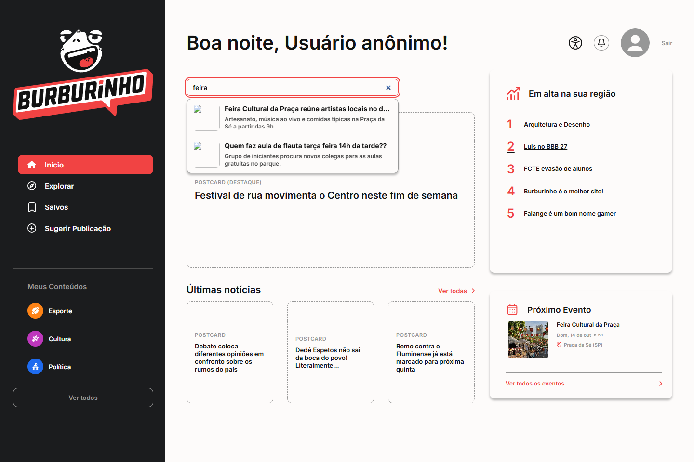 |
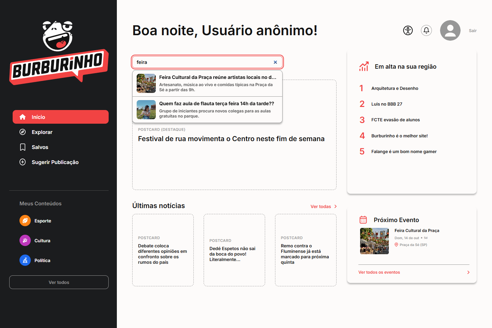 |
Sino — mesma sequência: abrir as notificações e clicar em “Marcar todas como lidas”. Antes, o clique também fechava o painel. Depois, as notificações são marcadas e o painel permanece aberto para leitura. As capturas mostram o estado imediatamente após o clique.
| Antes: painel fechado pelo clique | Depois: painel permanece aberto |
|---|---|
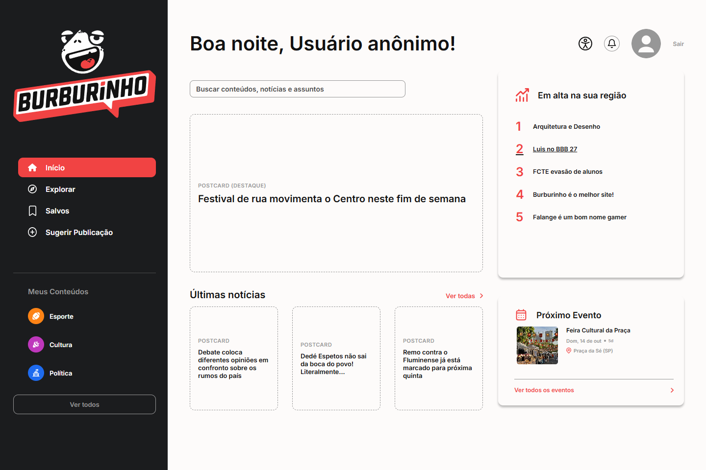 |
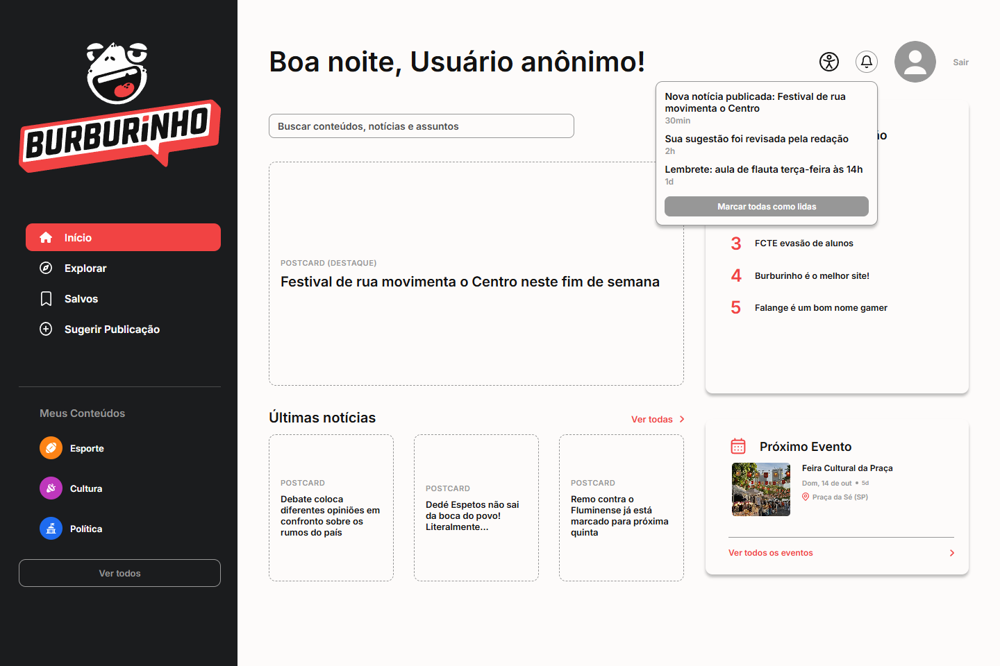 |
Os dois cenários foram reproduzidos no navegador e conferidos por verificações do painel e do carregamento das imagens. Alterações internas, como isolamento do Observer e direção das dependências da fábrica, são demonstradas pelos testes e trechos de código, pois não mudam a aparência da tela.
Integração com a contribuição do Luís — PR #18
Origem: PR #18 — Feat/4 noticia sugerir, versão ca9aa2809085cd2d13bf3072472c0c6bd3dfadb4, incorporada ao checkout da branch feat/comparacao-pedro do fork de Pedro. As telas de Notícia e Sugerir, o NoticiaBuilder e os demais componentes desse PR são contribuição do Luís; esta seção registra somente a integração feita na revisão.
- Conflito no sino: foram combinados o fechamento por clique fora e o rótulo com quantidade de não lidas do PR com os IDs únicos, a região acessível e o retorno de foco com Escape da revisão. O clique em marcar como lidas continua sem fechar o painel.
- Integração de Salvos: o botão da nova página de notícia usava um booleano local. Foi conectado ao
useSalvosexistente, para compartilhar o estado com/salvose recuperar a escolha ao recarregar a página. - Conflito documental: a linha e a seção do Luís foram trazidas do PR, preservando sua redação. As linhas existentes dos demais colegas foram mantidas. As observações atualizadas sobre esta revisão ficam nesta seção de Pedro.
Capturas após integrar o PR: a primeira mostra a notícia ainda marcada como “Salvo” após recarregar; a segunda mostra o envio demonstrativo e a prévia da sugestão. Essas telas são do PR do Luís, com a integração de Salvos descrita acima.
| Notícia: estado Salvo recuperado | Sugerir: confirmação e prévia |
|---|---|
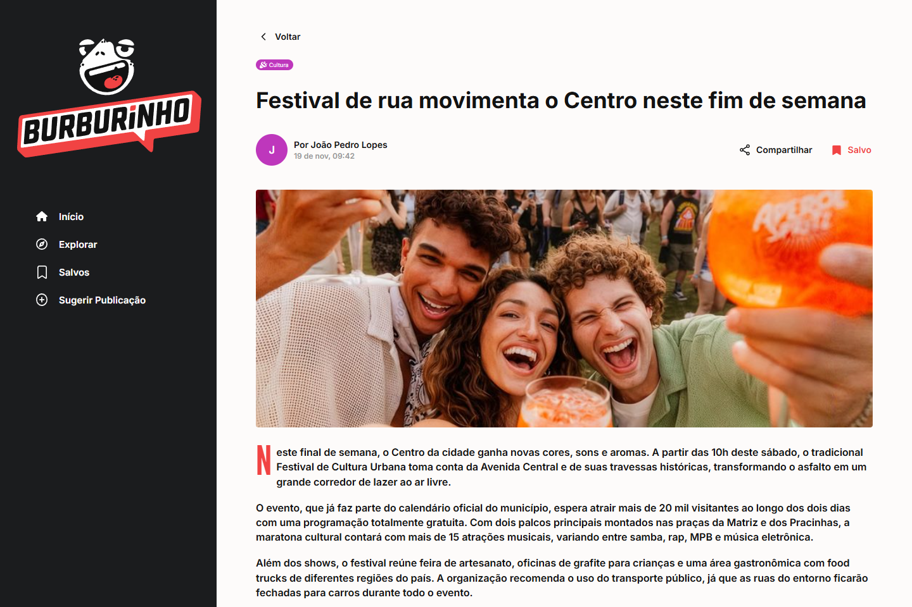 |
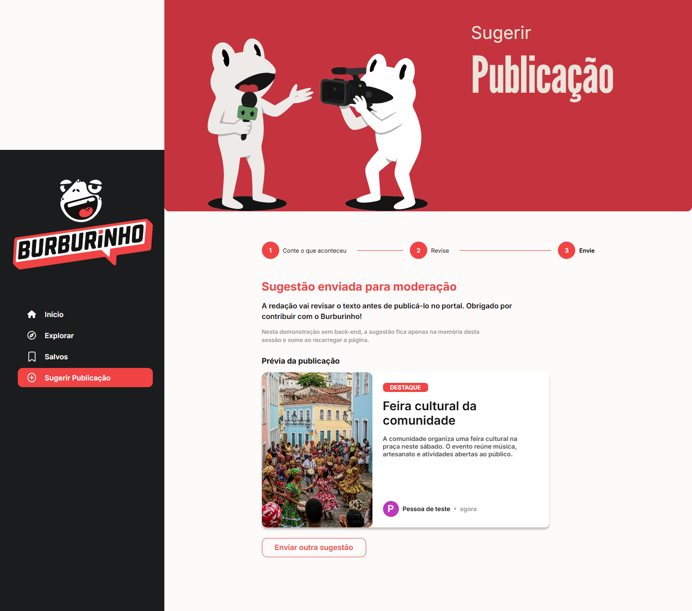 |
Validação: 180 testes aprovados em 25 arquivos, lint e build de produção aprovados. O build gera 27 páginas estáticas, incluindo as rotas de notícia e sugestão. No navegador, foram verificados salvar, recarregar e localizar a notícia em Salvos; enviar uma sugestão e visualizar sua prévia; marcar notificações sem fechar o painel; fechar por Escape com retorno de foco e por clique fora; carregar as imagens da busca no prefixo do Pages.
Validação e reprodução
| Verificação | Evidência e comportamento exercitado |
|---|---|
src/hooks/useSalvos.test.tsx |
Dois consumidores alterando o mesmo conjunto; mudança e limpeza em outra aba; gravação bloqueada; hidratação do HTML estático sem erro recuperável ou perda dos dados. |
src/padroes/eventBus.test.ts |
Exceção síncrona, rejeição assíncrona, nome constructor e cancelamento durante uma entrega. |
src/hooks/useNotificacoes.test.tsx |
Dois eventos com Date.now() fixo continuam gerando IDs diferentes. |
src/components/BarraBusca/BarraBusca.test.tsx |
Resultados mantêm o prefixo /repositorio/portal nas imagens. |
src/components/NotificationBell/NotificationBell.test.tsx |
Botão nativo, marcação sem fechar painel, Escape com retorno de foco e duas instâncias com IDs distintos. A semântica nativa é verificada em jsdom; não houve ensaio completo com leitor de tela. |
src/padroes/fabricaCategorias.test.ts |
Cultura aciona o renderizador; as demais famílias retornam null sem acioná-lo. Os testes existentes de PaginaCategoria verificam a agenda renderizada. |
Uso da IA Generativa
Usei IA generativa como apoio para ler transcrições extensas de vários vídeos, coletar e organizar informações relevantes e compará-las entre as fontes. Esse uso ajudou a identificar pontos em comum, diferenças e complementações sem precisar reler manualmente cada transcrição inteira. Ai, conferi as informações relevantes nas fontes e validei coisas relacionadas ao sistema. Nas fontes sem transcrição disponível, não atribuí conclusões ao vídeo.
FOCO_02: IA Generativa
Entrega Mínima: pontos de vista de cada membro da equipe sobre as lições aprendidas e uso da IA Generativa. TODOS DEVEM PARTICIPAR.
Participantes no Foco_02
| Nome do Membro | Lições Aprendidas | Uso da IA Generativa (SENSO CRÍTICO) |
|---|---|---|
| Giovanna Aguiar | Aprendi na prática que dá para compartilhar preferências com o portal inteiro sem passar props por todas as páginas. O hook deixa explícita a dependência do Provider, e as variáveis CSS evitam que cada componente precise saber qual tema está ativo. Também aprendi que a persistência precisa ser recuperada antes da primeira gravação, senão o valor padrão apaga a escolha anterior. Por fim, vi que reutilizar bem depende de manter o Context pequeno, só com preferências. | Usei o OpenAI Codex para ler a issue e o repositório, inspecionar o Figma e gerar o Provider, o hook, o toggle, as páginas, os estilos, a story, os testes e o rascunho da documentação. A IA ajudou a montar rápido a estrutura, mas eu não aceitei o resultado sem validar: rodei testes, lint e build e conferi no navegador e no Figma. Eu mesma decidi o que o protótipo não cobria. Percebi que a inteligência artificial consegue seguir bem as instruções, mas muitas vezes deixa passar detalhes importantes, o que exige correções. Conversas com a IA: conversa 1 · conversa 2. |
| André Henrique | Na prática, reutilizar foi separar estrutura de dados: as 4 telas de categoria do Figma viraram 1 componente (PaginaCategoria) e 1 rota (/categoria/[categoria], com generateStaticParams gerando as 4 páginas no build), e o que muda entre elas ficou na fábrica de categorias. Revisando a fábrica, percebi que a primeira versão só devolvia dados, o que é uma tabela de configuração e não um Abstract Factory. Corrigi para os produtos terem comportamento (TemaCategoria.estilo() e SecaoCategoria.renderizar(), com SecaoEventos em Cultura e SecaoVazia nas outras), retomando a lição da Entrega 03. O PostCard mostrou o valor das props: a prop variante cobre os 3 formatos do Figma, e o slot acoes deixa a vaga 5 encaixar o botão Salvar sem mexer no card. Também aprendi quando não abstrair: o bloco Eventos só existe em Cultura, então virou um produto daquela família e não um if na página. O hot spot da aula ficou concreto: a rota [categoria] é o ponto que o Next.js chama, e a fábrica é o ponto que nós especializamos. |
Usei o Claude Code, ligado ao Figma por MCP, como ferramenta para ler o protótipo e acelerar a escrita de componentes, testes e texto, sempre com a minha revisão. As decisões de escopo e as correções de projeto passaram por mim: manter a troca dos marcadores da Home com a vaga 2 (regra da issue #10), salvar o Seguir no localStorage e ligá-lo à SideBar, deixar as páginas com largura total e refazer a fábrica com produtos que têm comportamento. Validei rodando o portal ao lado do Figma, com os testes (que pegaram a data "01 de nov" e a cor do badge descartada pelo jsdom) e com uma busca no código para garantir que nenhum componente cita uma categoria pelo nome. Os problemas mais importantes só apareceram na revisão: a largura fixa, o Seguir que não persistia e a fábrica sem comportamento. A IA não deve ser usada sem revisão para decidir o escopo de outra pessoa nem para afirmar que algo funciona sem rodar. |
| Giovanna Felipe | ||
| João Pedro Lopes | Na prática, percebi que as 4 variantes do Menu de Opções SideBar no Figma eram o mesmo componente com um só ponto de variação (o item ativo), então virou uma prop itemAtivo com o padrão vindo da URL, e os itens do menu viraram o array ITENS_MENU: acrescentar uma opção é uma linha de dados, não um novo bloco de JSX. O AppLayout mostrou a força da composição com children: colocado no layout.tsx raiz (o hot spot do Next.js), leva a SideBar a todas as rotas sem que nenhuma página precise importá-la, o que deixou o Princípio de Hollywood concreto. Também aprendi que reutilizar lógica é diferente de reutilizar tela: o useSessaoSimulada é o mesmo para a SideBar e a Home, e por isso as duas versões do Figma (logado e deslogado) ficam coerentes entre si. Os marcadores provisórios da Home me ensinaram a combinar contratos antes do código: a Home já tinha o lugar do PostCard, da BarraBusca e do NotificationBell antes de esses componentes existirem. Por fim, ao integrar a notícia, vi que um componente só é reutilizado de verdade quando alguém o usa: o Salvar tinha um estado local e passou a usar o useSalvos da vaga 5, para a notícia aparecer em /salvos. | Usei o Claude Code, ligado ao Figma por MCP, para ler os frames da SideBar e da Home, comparar as variantes, exportar os ícones e acelerar a escrita dos componentes, dos testes, dos diagramas de Pacotes e de Componentes e do rascunho desta documentação. A IA ajudou bastante a chegar rápido a uma estrutura, mas as decisões foram minhas: usar marcadores em vez de reimplementar componentes de outras vagas, não mexer no código dos colegas sem combinar e manter o login apenas simulado. Validei rodando o portal lado a lado com o Figma, com os testes da SideBar e da Home (item ativo pela URL, prioridade da prop, "Meus Conteúdos" só logado, Entrar e Sair), com lint e build e conferindo o deploy na subpasta do GitHub Pages. Alguns problemas só apareceram na revisão e na integração: a rolagem da página, o texto do envio do Sugerir e o Salvar da notícia, que não persistia. A IA também tende a afirmar coisas sobre o código e o protótipo com mais certeza do que deveria (contagens de uso, rotas existentes), então tudo o que entrou no relatório foi conferido no Figma ou no código do main. |
| Johnnatan de Salles | O catálogo aproxima a documentação dos componentes reais e permite observar as variações sem duplicar telas. Uma contagem de chamadas não é a mesma coisa que contar instâncias renderizadas ou rotas geradas. A seleção de tema ilustra uma alternativa de variabilidade. | O Copilot SDK no VS Code auxiliou na implementação e no rascunho. A documentação oficial, testes, builds e uma conferência local foram usados para validar o resultado. O catálogo publicado e o mapa final ainda dependem do merge e do congelamento; a separação dos ornamentos também permanece pendente. Texto sujeito à revisão do responsável. |
| Júlia Gabriella | ||
| Luís Cunha | Na prática, separar o comportamento variável das ações em props mostrou como um mesmo componente pode atender Voltar, Compartilhar, Salvar e Enviar sem duplicar markup. No formulário, CampoFormulario centralizou rótulo, erro e useId(), enquanto o NoticiaBuilder mostrou que o padrão de montagem deve validar o produto no final e não distribuir validações em 10 parâmetros. |
Usei IA para interpretar os frames do Figma e acelerar componentes e testes, mas validei o código com build, 141 testes e inspeção visual em navegador. Corrigi diferenças que a implementação inicial não havia identificado, como larguras, espaçamento da notícia e campos visíveis no Sugerir. Não considerei a primeira sugestão da IA como pronta: a revisão localizou assets incorretos, tipografia desalinhada e documentação pendente. |
| Matheus Eiki |
Versionamentos
| Nome do Membro | Contribuição | Data |
|---|---|---|
| Pedro Henrique Ferreira Xavier | Revisão comparativa e correções transversais na Entrega 04: centralização do estado compartilhado de Salvos em lib/noticiasSalvas.ts; ajustes em useSalvos, useNotificacoes e eventBus; correção dos IDs e da interação da NotificationBell; revisão dos caminhos da busca e da BarraBusca; desacoplamento e correção da fábrica de categorias e da PaginaCategoria; adição de testes e documentação antes/depois. Evidências: Revisão comparativa e correções de lógica. Alterações na branch feat/comparacao-pedro, pendentes de commit. |
20/11/2026 |
| Giovanna Felipe | Estruturação do relatório com guia de preenchimento por seção | 18/11/2026 |
| João Pedro Lopes | Seção "Reutilização 2: Navegação e Layout" (SideBar, AppLayout, Home) e linha no Foco_01 (issue #2) | 19/11/2026 |
| Giovanna Aguiar | Implementação e documentação da vaga 6: Context de tema e preferências, toggle, Acessibilidade, Perfil, story e testes; evidências locais em Reutilização 6. Issue #6. Commit comprobatório: 5633092. | 19/11/2026 |
| André Henrique | Seção "Reutilização 3: Cards e Páginas de Categoria" (PostCard, BadgeCategoria, PaginaCategoria, fábrica de categorias, Explorar) e linhas no Foco_01 e no Foco_02 (issue #3) | 19/11/2026 |
| Luís Cunha | Implementação da vaga 4 (BotaoAcao, CampoFormulario, PaginaNoticia, NoticiaBuilder e PaginaSugerir), correções visuais comparadas ao Figma e seção "Reutilização 4" (issue #4) | 20/11/2026 |
| Matheus Eiki | Seção "Reutilização 5: Busca, Notificações e Salvos" (BarraBusca, NotificationBell + useNotificacoes via eventBus, página Salvos + useSalvos) e linha no Foco_01 (issue #5) | 19/11/2026 |
| Johnnatan de Salles | Catálogo Storybook, logo sazonal e mapa provisório (issue #7); link do PR/commit a adicionar após publicação. | 19/11/2026 |
Referências
META PLATFORMS. React: Passing JSX as children. Disponível em: https://react.dev/learn/passing-props-to-a-component#passing-jsx-as-children. Acesso em: 19 nov. 2026.
STORYBOOK. Storybook for Next.js with Vite. Disponível em: https://storybook.js.org/docs/get-started/frameworks/nextjs-vite. Acesso em: 19 nov. 2026.
STORYBOOK. Automatic documentation and Storybook. Disponível em: https://storybook.js.org/docs/writing-docs/autodocs. Acesso em: 19 nov. 2026.
VERCEL. Next.js Documentation: Layouts and Pages. Disponível em: https://nextjs.org/docs/app/getting-started/layouts-and-pages. Acesso em: 19 nov. 2026.
VERCEL. Next.js Documentation: usePathname. Disponível em: https://nextjs.org/docs/app/api-reference/functions/use-pathname. Acesso em: 19 nov. 2026.
SERRANO, Milene. Reutilização & Framework. Material de aula da disciplina Arquitetura e Desenho de Software. Brasília: Universidade de Brasília, 2026. Slides 18, 62 a 69 e 76 a 78.
GAMMA, Erich; HELM, Richard; JOHNSON, Ralph; VLISSIDES, John. Design Patterns: Elements of Reusable Object-Oriented Software. Boston: Addison-Wesley, 1994. (Abstract Factory, p. 87.)
META PLATFORMS. React: Passing Props to a Component. Disponível em: https://react.dev/learn/passing-props-to-a-component. Acesso em: 19 nov. 2026.
META PLATFORMS. React: useSyncExternalStore. Disponível em: https://react.dev/reference/react/useSyncExternalStore. Acesso em: 19 nov. 2026.
VERCEL. Next.js Documentation: Dynamic Routes e generateStaticParams. Disponível em: https://nextjs.org/docs/app/api-reference/file-conventions/dynamic-routes. Acesso em: 19 nov. 2026.
VERCEL. Next.js Documentation: basePath (Images). Disponível em: https://nextjs.org/docs/app/api-reference/config/next-config-js/basePath#images. Acesso em: 19 nov. 2026.